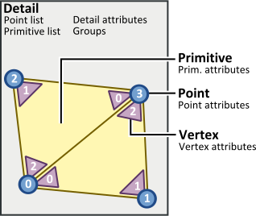
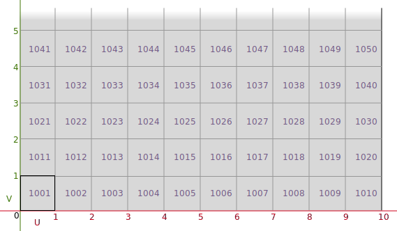
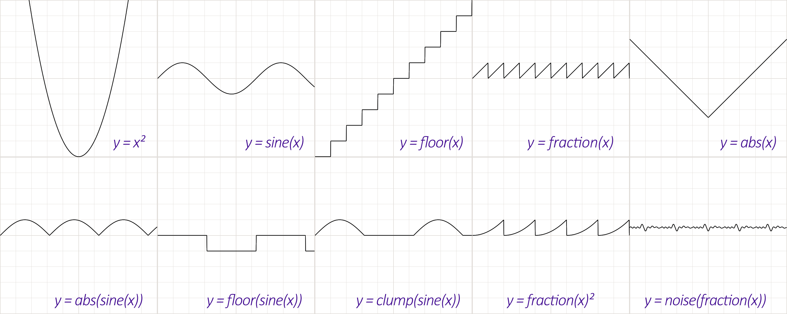

들어가며
- 후디니는 SideFx사에서 만든 노드 기반 모델링 툴로써 절차적 모델링이 가능하다
- https://www.orbolt.com/search/?q=softpackage:Houdini

- point
- vertex
- primitive
- detail
조작키
Overview
| 마우스 | 좌클릭 + 이동 | 선택 |
| 우클릭 + 이동 | 줌 | |
| 휠클릭 + 이동 | 뷰 잡아서 이동 | |
| ALT 좌클릭 + 이동 | 복제 | |
| Enter | 핸들 보여주기 ( 노드 별 다름 ) | |
| 뷰모드 | Space | 토글 / 누른채로도 유지 가능 |
| F | 오브젝트 포커스 | |
| W | Wire 프레임 | |
| Shift + W | Shaded/Wire-overShaded | |
| D | 옵션 - Display Option | |
| Y | 고스트 오브젝트 하이드 토글 | |
| Ctrl + B | 뷰포트 전체화면 | |
| Space + B | 뷰포트 4분할 (씬 뷰) | |
| Space + G | 오브젝트 중심으로 줌 | |
| Ctrl + J | 토글 멀티 스냅핑 | |
| 선택모드 | S | 토글 |
| T | 움직임(Translate) | |
| R | 회전(Rotate) | |
| E | 스케일(scalE) | |
| 1 | Select - Object | |
| 2 | Select - Point | |
| 3 | Select - Edge | |
| 4 | Select - Primitive | |
| 드래그 | 선택 | |
| Shift + 드래그 | 선택 - 추가 | |
| Ctrl + 드래그 | 선택 - 해제 | |
| C | 메뉴 | |
| 카메라 모드 | ESC | View Tool |
| Viewport | 1 | Viewport - perspective |
| 2 | Viewport - Top | |
| 3 | Viewport - Front | |
| 4 | Viewport - Right | |
| 5 | Viewport - UV | |
| CTRL + 1,2,3,4,5,6,7,8 | Viewport - 분할뷰 | |
| Pane | CTRL + W | Pane 닫기 |
| Pane | CTRL + B | Pane 최대/최소화 |
| ALT + [ | Pane 세로로 줄귿기 | |
| ALT + ] | Pane 가로로 줄귿기 | |
| ** ALT + 1 | 씬 뷰 | |
| ** ALT + 2 | 네트워크 뷰 | |
| ALT + 3 | 파라메터 | |
| ALT + 4 | 트리 | |
| ALT + 5 | 텍스트포트 (여기서는 알트 단축키 안먹음) | |
| ALT + 6 | 애니메이션 에디터 | |
| ALT + 7 | 머티리얼 | |
| ** ALT + 8 | 지오메트리 스프레드 시트 | |
| ALT + 9 | 렌더뷰 | |
| ALT + 쉬프트 + W | 새로운 창 |
Object View
- https://www.sidefx.com/docs/houdini/network/wire.html
| Object View | |
|---|---|
| Y | 가위자르기 |
| P | 프로퍼티 보기 |
| U | 상위 노드로 이동 (Up) |
| O | 네트워크 오버뷰 |
| Z | 노드 모양 // Ctrl + 드래그로 기본 노드 모양 변경 가능 |
| C | 노드 색깔 // Ctrl + 드래그로 기본 노드 색깔 변경 가능 |
| A + 마우스 아레 | 노드 Layout 정렬. 노드 선택후 A키 누른상태에서 아래로 (https://siver.artstation.com/blog/zORm/houdini-blog-22-tips-and-tricks) |
| L | 노드 Layout 정렬. 선택한것들 Layout |
| Shift + L | 노드 Layout 정렬. 전체 Layout 정렬 |
| . | . |
| Shift + R | 입력 순서 교체 |
| Shift + S | 선 스타일 바꾸기 // wiring style change: rounded <-> straight |
| Shift + Z | 그룹보기 |
| Shift + O | Network Box |
| Shift + P | Sticky 노트 |
| Ctrl + I | Background Images: Enable/Disable // Shift + I 혹은 Labs > Sticker Placer |
| Ctrl + F | 노드 찾기 |
| Alt | 선을 끌어당기고 있는 상태에서 이음 노드 추가. |
| Q/B | 노랑색 Bypass |
| W | 진한 보라색 |
| E | 연한 보라색 미리보기 토글 |
| R | 파랑색 선택된것들 돌아가며 선택 |
Keyframe
alt
Ref
-
Ctrl + Alt + Shift + Click : Hotkey Manager
- Spreadsheet : Shift + B
-
Ctrl + Alt + S : tab menu 제거
-
Alt + P : timeline 축소
-
Ctrl + E : vex 편집창
-
Ctrl + 마우스 중간 : Revert To Default
-
Ctrl + Shift + 마우스 왼쪽 : Delete Channel
-
코드 폰트 확대 축소
- 확대: Ctrl +
+ - 축소: Ctrl +
-
- 확대: Ctrl +
Alt + 마우스 가운데 버튼 : Export Parameter to Type Properties
설정
houdini.env
C:\Users\pyoung\Documents\houdini19.5\houdini.env
# houdini.env
# https://www.sidefx.com/docs/houdini/basics/config_env.html
## Windows | %HOME%/houdiniX.Y/houdini.env
## Mac | ~/Library/Preferences/houdini/X.Y/houdini.env
## Linux | ~/houdiniX.Y/houdini.env
# EDITOR = "C:/Program Files/Microsoft VS Code/Code.exe -w"
환경변수
-
환경변수 확인
- Help > About Houdini > Show Details
-
https://www.sidefx.com/docs/houdini/ref/env.html
| Env | |
|---|---|
| $HIPFILE | hip 파일 |
| $HIPNAME | hip파일의 확장명을 제외한 파일명 hello.hip => hello |
| $HIP | hip 파일이 저장된 절대경로 |
| $JOB | project 절대경로 ( File > New Project ) |
| $HFS | The path where Houdini is installed. Houdini reads the configuration information from $HFS/houdini. |
| $HH | The path to Houdini supporting scripts and files inside $HFS. Usually $HFS/houdini |
| $HHP | The path to Houdini’s python libraries. This will differ depending on the version of python that Houdini is built with. For example $HH/python3.7libs. |
HOUDINI_OTLSCAN_PATH
| Aliases and Variables... | Alt+Shift+V |
Job
- https://www.sidefx.com/docs/houdini/basics/project.html
단축키
| Edit > Hotkeys | ||
|---|---|---|
| Copy Parameter | /Houdini/Panes/Parameter Fields and Labels | Ctrl+Shift+C |
| Copy Parameters | /Houdini/Panes/Parameter Spreadsheet | Ctrl+Shift+C |
| Paste Copied Relative Refs | Ctrl+Shift+V |
색상 조정
- 후디니> Edit > Color Setting > Color collection 확인
유닛 단위 조정
Edit > Preference > Hip File Options > Unit Length(m)
| 1 unit | |
|---|---|
| houdini | 1 meter |
| unity | 1 meter |
| unreal | 1 cm |
파일
| 분류 | 확장자명 | 설명 | LICENSE |
|---|---|---|---|
| 씬파일 | .hip | Houdini Independent Package | |
| .hiplc | Houdini Independent Package Limited Commercial | INDIE | |
| .hipnc | Houdini Independent Package Non-Commercial | EDUCATION / APPRENTICE | |
| 에셋 | .hda | Houdini Digital Assets | |
| .hdalc | Houdini Digital Assets Limited Commercial | INDIE | |
| .hipnc | Houdini Digital Assets Non-Commercial | EDUCATION / APPRENTICE | |
| 세션 | .hess | Houdini Engine SessionSync |
| storing Houdini geometry | |
|---|---|
| .geo | ASCII |
| .bgeo | binary |
| .bgeo.sc | compressed .bgeo file (using BLOSC compression). These are often as fast (or faster) to read/write than plain .bgeo files, and take less disk space. |
- Blosc
- https://www.blosc.org/pages/blosc-in-depth/
HDA
Houdini Digital Assets
| 저장 | 노드 우클릭 > Save Node Type 혹은 Assets > Save Asset > 해당 에셋 |
| 락 풀기 | Allow Editing of Contents |
| 락 걸기 | Match Current Definition (주의 Revert와 같은거. Save Node Type 필수) |
| 속성 편집 | Type Properties |
File > Import > Houdini Digital Asset...
-
Transform.scale을 드래그해서 Edit Parameter Interface에 넣기
- Subnetnetwork는 추가 가능
- Null CONTROL에 넣으려고 하면 Node is outside subnet 라고 창이 뜨면서 추가가 안됨.
- 파라미터 추가 창에서 Forbid Linking Parameters from Outside this Subnet 을 체크 해제하면 추가 할 수 있음.
- HDA는 에는 사용 가능한것처럼 보이나 Type Properties 수정시 날라감.
-
파라미터 필드 추가 단축키
- alt + 마우스 중간 쿨릭
Type Property - Copy Default From Node 현재 노드에 셋팅된걸 디폴트로
- Introduction to HDA (Houdini Digital Asset) in Unreal Engine UE4 & Houdini for Beginners
- Foundation Module - All Lecture Series
Geometry Node
SOP
-
attr
-
기본
- sphere
- box
- grid
- tube // cone을 만들때도 사용
- rubbertoy
- tommy
- platonic(tetrahedron/cube/octahedron/icosahedron/dodecahedron/soccerball/utahteapot)
| 노드 | |
|---|---|
| Add | 점 추가 // 모델에서 점만 남기기, 점으로 선만들기 |
| Ends | Face/Hull 탭과 같은 기능입니다 |
| Peak | Peak 노드는 프리미티브/포인트/에지/브레이크 포인트를 법선 방향으로 이동합니다 |
| Transform | 트랜스폼 - 전체/그룹 // Move Centeroid To Origin도 유용 |
| Edit | 트렌스폼 - 컴포넌트 단위 |
| Delete | 지우기 - 기능 더 많음 // 패턴 및 start/end // 중간에 있는 점의 노말을 살려야할시 v@N = cross(v@up, v@side) |
| Blast | 지우기 - 간단한 |
| Poly Extrude | 밀어내기(extrude), 그룹핑 가능 |
| Poly Bevel | 비스듬한면(bevel), 선에 점을 추가하여 아치형으로 변경 |
| Poly Path | 이어진 여러 라인을 하나의 라인으로 만듬. // 둘러싸여진 라인에서 면을 만듬 |
| Poly Frame | TangentName에 N을 넣는. TBN 구하기 // 선의 Tangent를 노말을 할당해서 노말이 선따라 가게 |
| Poly Fill | 채우기 |
| Poly Split | 자르기 - Edge Percentage가 유용 // 면을 자를때 좋음 |
| Poly Cut | 면없에기 // 선따기 좋음 |
| Poly Doctor | |
| Group | 그룹핑 - 추가 // 바운딩박스로도 그룹핑 가능(ex 가운데 점만 얻기) // 노말로 그룹핑(ex 상단 점들만) |
| Group Expression | 그룹핑 - 표현식으로 // Union with Existing |
| Group Delete | 그룹핑 - 삭제 |
| Group by Range | 그룹핑 - 범위 // Invert Range |
| Group Combine | 그루핑 - boolean연산 |
| Group Transfer | 그루핑 - override / distance threshold 유용 |
| Reverse | 노말 - 반대로 |
| Normal | 노말 - 스무스 효과 가능 Cusp Angle이 작을수록 하드, 클수록 소프트 |
| Boolean | 교집 - 교집합/합집합 |
| Clip | clipping - 반으로 자르는거 |
| ROP Geometry Ouput | 캐쉬 - 생성 $HIP/geo/$OS.bgeo.sc // $OS. Operator String 노드이름 |
| File | 캐쉬 - 불러오기 |
| File Cache | 캐쉬 - 생성 / 불러오기 - 기능이 2개라 햇갈려서 잘 쓰지 않음 |
| Attribute Create | Attribute - 생성 // 그룹에 대한 attribute 생성도 가능 // $PR 할당할때 |
| Attribute from Map | Attribute - 이미지로부터 attribute를 가져옴 |
| Attribute Promote | Attribute - 포인트 어트리뷰트를 프리미티브 어트리뷰트로 변환하는것 처럼 서로 다른 클래스로 어트리뷰트 전환이 가능 |
| Attribute Transfer | Attribute - 이전. // condition을 이용해서 거리에 따른 Attribute를 가져올 수 도 있다. |
| Attribute Randomize | Attribute - 랜덤화 |
| Attribute VOP | Attribute - VOP 노드에는 자체는 키를 줄 수 없다 / VOP 노드 선택> VEX/VOP Options> Create Input Parameters |
| Scatter | 면에다 점찍기 |
| Triangulate | 포인트를 잘 연결해 트라이엥글로 만들어줌 |
| Triangulate 2D | 포인트를 잘 연결해 트라이엥글로 만들어줌 |
| Resample | 다시 표본화. 선에 점찍는 용도. Treat Polygons As - Subdivision Curves로 휘어짐을 표현할 수 도 있다 |
| Polywire | 와이어프레임 |
| Curve | 간단한, 베이지어 커브 // transform에서 bbox를 이용 살짝 올리고 height field에 ray랑 같이 써도 좋음 |
| Draw Curve | 그릴 수 있지만, 거칠기에 Smooth를 같이 써주는게 좋다. |
| Smooth | 완만하게 해주는거 커브, 리셈플이랑 주로 같이 쓰임 |
| Carve | 깍아내기 // uv로 선을 자름 |
| Sweep | 선따라 길만들기 // UVs and Attribute - Compute UVs 도 있으니 참고. |
| Copy To Point | 포인트들 위치로 복사 // attribute 삭제되는거 주의 // Pack and Instance 로 입력 Geometry단위로 Primitive로 묶을 수 있음 |
| Copy And Transform | 갯수만큼 복사 // 테두리같이 뭔가 둘러싸는 걸 만들 때도 유용 / Match Size로 위치조정 |
| Foreach | https://www.youtube.com/watch?v=xs5WezgOZlo |
| Platonic Solids | Tetrahedron(4)/Cube(6)/Octahedron(8)/Icosahedron(20)/Dodecahedron(12)/Soccer ball(pentagonal b12 + w20)/Utah teapot |
| Iso Offset | Builds an offset surface from geometry. // 볼륨변환 // Scatter랑 같이 쓰이기도함 |
| Convert | 지오메트리 - 기하학을 변환(ex 폴리곤화) // 라인을 커브로 // LOD |
| Remesh | 지오메트리 - 메쉬 늘리기/줄이기 |
| Remesh to Grid | merge같이 합친후 하나의 메쉬 처럼 보이도록 할때 |
| Facet | 지오메트리 - 점 또는 표면 법선을 통합 // remove inline points로 resample한걸 합칠 수 있다. // post-compute normal로 노말만들때도 사용 |
| Fuse | 각 포인트들을 거리나 Snap에 따라 합치기. 프리미티브 가운데 찾기. Normal 다시 계산하는게 기본이므로 Remove Affected Normals 확인 하자 |
| Clean | 겹쳐진 primitive 삭제가능 |
| Divide | Don't Generate Slivers/Avoid Small Angles 동시 체크 추천. // Remove Shared Edge 엣지 지우면서 합치기 |
| linear taper | 오므라들게 |
| Match Size | Resizes and recenters the input geometry to match a reference bounding box. // Scale To Fit 유용 |
| Skin | 두 표면사이에 스킨을 씌워준다. // Keep primitives 로 원래 모양도 유지가능 |
| Sort | Point 나 Primitive를 정렬 혹은 랜덤 /. Shaft/Offset을 이용 오프셋 작업 가능Ï |
| Convert Line | 포인트끼리 연결한 라인 // Join 반대라고 생각하면 됨. |
| Object Merge | 외부 노드 불러오기 |
| Visualize Attribute | Attribute 기반 시각화 / TBN(rgb)을 시각화 시키면 좋다 / Type : Marker - Style : Vector |
| Pack | Pack하면 Point 1개와 Primitive 1개로 처리(foreach돌때 좋을듯) / 게임엔진에서 별도의 메쉬로 취급 |
| Unique Points/Point Split | Splits points shared by multiple vertices, optionally only if the vertices differ in attribute value. / PolyWire랑 쓰면 좋음 |
| Paint | 페인팅 |
| Point | 어트리뷰트 생성 ( point ) // 포인트에 Cd어트리 뷰트 생성시 유용 |
| Point Jitter | |
| Measure | area 계산 |
| Lattice | 공간 왜곡 |
| Dissolve | https://www.sidefx.com/docs/houdini/nodes/sop/dissolve |
| PolyExpand2D | 밖 혹은 안으로 (ex quad 확장/축소) |
| PolyReduce | LOD |
| PolyBridge | 떨어진걸 이어줌 // 이상하게 이어져 있으면 Paring - Interpolation : Linear 확인 |
| Bound | box/sphere/rectangle의 바운딩 박스를 만듬 |
| Extract Centroid | 센터 구하기 |
| exploded view | 쪼개서 넓히기 |
| subdivide | 나누기. // 선의 중앙점도 쉽게 구할 수 있다 |
| font | 텍스트 쓰기 text |
| Intersection Stitch | ex 선 겹칠때 접점을 기준으로 나누기. 교차로 |
| Primitive Properties | Primitive의 수치 조정. 각 프리미티브 회전 등등 |
| Distance along Geometry | https://www.sidefx.com/docs/houdini/nodes/sop/distancealonggeometry.html |
| Orientation Along Curve | 선따라 N 셋팅 |
| Labs Edge Group To Curve | 태두리 구하기 |
| Labs Dissolve Flat Edges | |
| Switch / Switch-If |
Edge Straighten
Refine
| Merge | 합치기. 필요에 따라 Fuse를 뒤에 붙여 중복 제거 |
| Soft Transform | 부드러운 곡선 |
| Join | 선들 머지해서 연결작업(후처리)/선 끝을 서로 연결 // 떨어져있는 선 각각 프리미티브 합치기(Only Connected) |
| Mirror | 좌우 대칭 |
| Revolve | 중심 축을 중심으로 곡선을 회전하여 표면을 만듬. (ex 유리잔) |
- NURBS(Non-uniform rational basis spline)
| foreach | |
|---|---|
| iteration | 0, 1, 2 ... |
| numiterations | 1, 2, 3 ... |
| ivalue | start + increment * iteration |
| value | start + increment * iteration |
| Primitive Type | |
|---|---|
| Primitive | |
| Polygon | 삼각형 |
| Polygon Mesh | 사각형 |
| Mesh | |
| NURBS | |
| Beizer | |
| Polygon Soup |
Attribute VOP
- Bind 노드로 attribute 노출 가능.
- Constant로 연산시 캐스팅 주의 ( int 1.0 + float 0.5 = int 1로 되어버리는 경우가 있음 )
Point From Volume 액체 제작할때 많이 사용. 단독=> Geo, VDB from Polygon => SDF, Iso Offset => Fog Iso Offset 연기
Particle Fluid Surface
DOP Network VDB
smoke / fire / pyro
Pop Network 시뮬레이션
POP Object POP환경에 맞게 일반 파티클 시스템을 동적 오브젝트로 변환. POP Solver 타임스탭에 맞게 파티클을 업데이트 POP Source generates particles from geometry.
etc
후면 틴트: Display Options: Markers / Primitives / Tint Backfaces Display Options : Guids / Origin gnomon
foreach
https://www.sidefx.com/docs/houdini/nodes/sop/block_begin.html https://www.sidefx.com/docs/houdini/nodes/sop/block_end.html
| Begin - Method | |
|---|---|
| Fetch Feedback | |
| Extract Piece or Point | |
| Fetch Metadata | 빈 지오메트리 |
| Fetch Input |
| End - Iteration Method | |
|---|---|
| By Piece or Points | |
| By Count | 반복 횟수 지정 |
| End - Gather Method | |
|---|---|
| Feadback Each Iteration | |
| Merge Each Iteration |
UV
| Seams 경계선 | |
|---|---|
| UV Autoseam | |
| Group |
| UV Create | |
|---|---|
| UV Project | 프로젝션 기법을 이용하여 UV 전개 |
| UV Flatten | flattening constraints// Seam(이음매), Rectify(바로잡다) |
| AutoUV | SideFXLab 에 통합됨 |
| UV Unwrap | 자동 uv 평탄화 및 구릅핑 |
| UV Texture | 평면은 물론, 구형이나 원통형을 UV 전개 |
| Sweep | |
| UV Pelt | |
| Labs UV Unwrap Cylinder |
| UV Editing | |
|---|---|
| UV Edit | |
| UV Transform | |
| UV Fuse | |
| UV Layout | uv 그룹 배치 |
| UV Smooth | |
| UV Brush | |
| Labs UV Unitize |
| Validation | |
|---|---|
| Labs UV Distortion | |
| Labs Calculate UV Distortion | |
| Labs UV Remove Overlap | |
| Labs Texel Density |
| Preview | |
|---|---|
| UV QuickShade | 평면 // grid 한장 |
| Labs UV Visualize | UV 시각화 // Visualize UV Islands / Visualize Seams도 있다 |
| Labs Export UV Wireframe |
sphere - uvproject (polar)
- UV Layout
- Connectivity
- Seperate Edges - 액자같은거 Group으로 edge잘라서
- Island Attribute - Copy같이 여러개 만들었을때 attribute 만들고 unpack (transfer attribute)하고
- Connectivity
udim https://www.sidefx.com/docs/houdini/solaris/udim.html UDIM is a system for dividing texture space into multiple “tiles” in UV space, with each tile represented by a separate texture file on disk.

- 1001 기준
- 1만큼 옆으로(U)
- 10만큼 위로(V)
Labs Automatic Trim Texture Labs Trim Texture
UV 펴기
Tube
- UV Project
- Projection: Cylindrical
- Translate: centroid(opinputpath(".", 0), D_X) | centroid(opinputpath(".", 0), D_Y) | centroid(opinputpath(".", 0), D_Z)
- Scale: ch("../main_shape/radscale") * 2 | ch("../main_shape/height") * 2 | ch("../main_shape/radscale") * 2
ref
Step
| 점 추가 | Add |
| 모델에서 점만 남기기 | |
| 점으로 선만들기 | |
| 선에 점을 추가하여 아치형으로 변경 | PolyBevel |
배우기
- 카피 파라메터
- 인스펙터 수정
- 디스플레이뷰 점사이즈/숫자
아치형
- 그리드 1x1 // 2-2
- 그룹 @P.y > 0
- 베벌 distance 0.5
- 퓨즈
체우기
- 중심축을 정해 transform해서 띄워주고
- mirror - reverse normal : No
- skin
스크립트
| 종류 | 확장자 | 기타 |
|---|---|---|
| Python | .py | |
| VEX | .vlf/.vex | |
| expressions | 느림 | |
| HScript | 옛날꺼 |
VEX
- VEX(
VectorEXpressions)
| Vex | |
|---|---|
| vex | |
| h | #include<> 용 |
| vfl | Vex Function Library |
| pragma | vex 전용 pragma |
| ds | Dialog Script |
| houdini.env |
int assert_enabled() Returns 1 if the environment variable HOUDINI_VEX_ASSERT is set or 0 if the variable isn’t set. https://www.sidefx.com/docs/houdini/vex/assertions.html assert(1 == 2); assert(0 == 0);
에디터 설정
- Edit > Preference > Set External Text Editor
- VEXpression > 우클릭 > Expression > Edit in External Editor
- Visual Studio Code에 VEX 플러그인
// C:\Users\ (UserName) \Documents\houdini19.0\houdini.env
EDITOR = "C:\Users\(UserName)\AppData\Local\Programs\Microsoft VS Code\Code.exe"
노드
-
Attribute VOP
- Vex 시각화 그래프
-
Attribute Wrangle
- Vex 코딩
- Wrangle뜻
-
세미콜론(;) 붙여야함
-
주석
- //
- /* ... */
type@attribute
- geometry sheet에서 확인 가능
i@myint = 5; // i | int
f@myfloat = 12.234; // f | float
u@myvector2 = {0.6, 0.5}; // u | vector2
v@myvector = {1,2,3}; // v | vector
p@myquat = {0,0,0,1}; // p | vector4
2@mymatrix2 = {1,2,3,4}; // 2 | matrix2
3@mymatrix3 = {1,2,3,4,5,6,7,8,9}; // 3 | matrix3
4@mymatrix4 = {1,2,3,4,5,6,7,8,9,10,11,12,13,14,15,16}; // 4 | matrix
s@mystring = 'a string'; // s | string
d@mydict = {}; // d | dict
d@mydict['key'] = 'value';
dict s = {};
i[]@connected_pts = neighbours(0, @ptnum); // i[] | int[] array
// 정의 후 @attribute 형태로 쓸 수 있다.
// { ... } 과 set( ... ) 는 동일.
// 배열이 좀 특이함
function int[] HelloWorld(int a[])
{
int ret[];
return ret;
}
// boolean형이 없네
vector x0 = point(0, "P", @ptnum);
vector x1 = point(1, "P", @ptnum);
float dist = distance(x0, x1);
vector dir = normalize(x1 - x0);
vector next = x0 + dir * (dist / 2.0f);
@P = next;
@
xx
@P => points
@N => normals
@Cd => primvars:displayColor
@id => ids
@width,@widths,@pscale => widths
@v => velocities
@w => angularVelocities
@accel => accelerations
@uv => primvars:st
@Alpha => primvars:displayOpacity
v@N; // the normal. If this hasn't been set, vex will calculate it for you just by calling it without initialised values
v@up; // a vector to control the spin around the normal when using instancing/copytopoints/etc
p@orient; // vector4 used as explicit rotation for instances
3@transform; // matrix3 used to control rotation and scale for instances
4@localtransform; // matrix (4x4) used for kinefx joints
f@pscale; // uniform scale for instances
v@scale; // XYZ scale control for instances
v@P; // current elements position. can be set for points, can be read for vertices and prims. Prims will guess the midpoint, not always reliable!
v@Cd; // diffuse colour
| @elemnum | 현재 element | @id |
| @vtxnum | 현재 vertex (linear) | 흔히 말하는 버텍스 |
| @ptnum | 현재 point | 포인트(중복된 포지션이 없다) |
| @primnum | 현재 primitive | 단일 엔티티(면 or 구 ...) |
| @numelem | 총 element 갯수 | |
| @numvtx | 총 vertex 갯수 | |
| @numpt | 총 point 갯수 | |
| @numprim | 총 primitive 갯수 |
| @Time | Float time ($T) |
| @Frame | Float frame ($FF) // $F는 int frame |
| @SimTime | Float simulation time ($ST), only present in DOP contexts. |
| @SimFrame | Float simulation frame ($SF), only present in DOP contexts. |
| @TimeInc | Float time step (1/$FPS) |
| $VTX | vertexprimindex(0, @vtxnum); |
geometry attribute
| Geometry | ||
|---|---|---|
| @id | int | A unique element ID |
| @name | string | 이름 |
| @P | vector | 포지션 |
| @N | vector | 노말 |
| @v | vector | 속도 Velocity |
| @piece | int | 조각 |
| @pscale | float | Uniform scaling factor |
| @scale | vector | Whereas pscale is a single uniform scaling factor in all axes |
| Rendering | ||
|---|---|---|
| @uv | vector | UV |
| Shader | ||
|---|---|---|
| @Cd | vector | diffuse 색깔 |
| @Cs | vector | specular 색깔 |
| @Cr | vector | reflect 색깔 |
| @Ce | vector | emission 색깔 |
| @Ct | vector | transmit 색깔 |
| @Alpha | float | Alpha transparency override. The viewport uses this to set the alpha of OpenGL geometry. |
| @rough | float | Roughness override. |
| @fresnel | float | Fresnel coefficient override. |
| @shadow | float | Shadow intensity override. |
| @sbias | float | Shadow bias override. |
| Particle | ||
|---|---|---|
| @orient | vector4 | Quaternion orientation of a particle |
| @up | vector | Represents the up vector of a particle’s local space |
| @rot | vector4 | An additional offset-quaternion applied after all other attributes |
ch
-
파라미터 삭제시: More > Delete Spare Parameter
| ch | |
|---|---|
| chf | float |
| chi | int |
| chv | vector |
| chramp(channel,ramppos, time) | 조절 가능한 2차원 그래프 채널이 생긴다 |
quaternion
vector4 orient = quaternion(maketransform(@N, @up));
vector euler = quaterniontoeuler(orient,XFORM_XYZ);
v@rot = degrees(euler);
// maketransform: https://www.sidefx.com/docs/houdini/vex/functions/maketransform.html
vector4 quaternion(matrix3 rotations)
vector4 quaternion(float angle, vector axis)
vector4 quaternion(vector angleaxis)
vector qrotate(vector4 quaternion, vector v)
vector degrees(vector nums_in_rads)
vector quaterniontoeuler(vector4 orient, int order)
vector4 slerp(vector4 q1, vector4 q2, float bias)
vector4 qmultiply(vector4 q1, vector4 q2)
| Constant name | Rotation Order |
|---|---|
| XFORM_XYZ | Rotate order X, Y, Z |
| XFORM_XZY | Rotate order X, Z, Y |
| XFORM_YXZ | Rotate order Y, X, Z |
| XFORM_YZX | Rotate order Y, Z, X |
| XFORM_ZXY | Rotate order Z, X, Y |
| XFORM_ZYX | Rotate order Z, Y, X |
| XFORM_TRS | Translate, Rotate, Scale |
Etc
point("../OUT_P", 0, "P", 1) // OUT_P 노드의 0번째의 point P의 Y좌표(xyz / 012)
npoints(0) // 0번입력의 포인트 갯수
addpoint // removepoint
setpointattrib
setpointgroup
opdigits(".") // 현재 노드(".")의 이름의 숫자만 가져옴
rand(x) // 랜덤. 분포가 일정하게 되는데 그럴때 사칙연산을 내부적으로 넣어주기도 함
chramp("radious_ramp", @curveu) // 기어버튼으로 추가된 radious_ramp curveu의 위치 값을 가져온다
detail("../META/", "iteration", 0) // META에 있는 iteration의 0번째 값
prim("../OUT_Cd", 2, "Cd", 0) // OUT_Cd 노드의 2번째의 primitive Cd의 Red채널값(rgb / 012)
nprims(0) // 0번입력의 프라임 갯수
addprim // removeprim
setprimattrib
setprimgroup
primintrinsic // Reads a primitive intrinsic from a geometry.
addvertex
getpointbbox_center(input)
| clamp(value, min, max) | |
| fit(value, fromMin, fromMax, toMin, toMax) | |
| point(geometry, attribute_name, pointnumber) | geometry는 입력 순서(0부터) |
| 포지션 - minpos(geometry, point) | point에서 geometry에 레이를 쐈을시 가장 먼저 닿는 부분의 포지션 |
| 포인트 - nearpoint(geometry, pt) | geometry에 있는 모든 point 중에서 pt와 가장 가까운 point의 번호 |
| Vector getbbox_size(geometry) | Computes the size of the bounding box for the geometry. |
getbbox_max
vector currP = @P;
// 현재 위치에서 1번 지오메트리와 맨 처음으로 마주치게될 포지션.
vector hittedP = minpos(1, currP);
// 현재 위치에서 1번 지오메트리에 있는 모든 포인트 중 가장 가까운 포인트번호.
int nearPointNumber = nearpoint(1, currP);
// 1번 지오메트리의 nearpointNumber의 _id값.
int id = point(1, "_id", nearPointNumber);
float xyzdist(geometry, originVector) primuv()
expression - opinputpath(name, index) : input에 연결된 노드의 경로 값을 가져옴 opinputpath(".", 0) 현재노드의 0번째(첫번째) 입력
@opinput‹n›_‹name› @opinput1_P // 입력 1의 P.
v@P = lerp(v@P, @opinput1_P, chf('blend'));
i@id = @ptnum // 현재 point v@P = lerp(v@P, point(1, 'P', findattribval(1, 'point', 'id', i@id)), chf('blend')); v@P = lerp(v@P, point(1, 'P', idtopoint(1, i@id)), chf('blend'));
v@pos = uvsample(0, 'P', 'uv', chv('uv'));
setdetailattrib(0, 'foo', @ptnum, 'set');
relpointbbox(2, pos); addpoint(geoself(), pos);
pointprims => point to prim
primpoints => prim to point primvertices
neighbours
pcfind 범위(radius)에서 포인트를 찾음 nearpoints // pcfind를 편히 쓸 수 있는 버전
pritnf/ sprintf
배열
insert / append removeindex removevalue push / pop resize len argsort reverse reorder find
Point Cloud
- https://www.sidefx.com/docs/houdini/vex/functions/pcopen.html
- point cloud에서는 원하는 정보만 가져올 수 있다.
- 반면, nearpoint는 포인트만.
// pcopen: int pcopen(int opinput, string Pchannel, vector P, float radius, int maxpoints)
int pc_handle = pcopen(0, "P", @P, 1, 10);
if (pcnumfound(pc_handle) < 3)
{
removepoint(0, @ptnum);
}
pcclose(pc_handle);
int pts[] = nearpoints(0, @P, 1, 10);
if (len(pts) < 3)
{
removepoint(0, @ptnum);
}
pcimportbyidxf pcfilter pciterate pcfind pcimport pcnumfound
제어
- https://www.sidefx.com/docs/houdini/vex/statement.html
- 없는거 : switch
if / for / while / break / continue / do while
foreach ([element_type] value; array) {
}
foreach (index, value; array) statement;
foreach (int index; element_type value; array) statement;
함수
int test(int a; int b; string c)
{
return 1;
}
구조체
struct SHello
{
int a = 1;
int b;
int Func()
{
return a;
}
}
SHello x = SHello(1, 2);
문자열
startswith endswith find match concat join split lstrip / rstrip splitpath isdigit opdigits // Returns the integer value of the last sequence of digits of a string https://www.sidefx.com/docs/houdini/vex/functions/opdigits.html atoi / atof itoa
정규표현식
string regex = r''; i@match = re_match(regex, teststring); re_match re_find re_findall re_replace re_split
Random
https://www.sidefx.com/docs/houdini/vex/random.html
| Noise | Relative cost |
|---|---|
| Perlin noise (noise) | 1.0 |
| Original perlin noise (onoise) | 1.1 |
| Worley noise (wnoise) | 1.8 |
| Sparse Convolution noise (snoise) | 2.1 |
| Alligator noise (anoise) | 2.3 |
curlnoise flownoise
수학
fit lerp distance
| normalize | |
| cross | |
| abs | |
| dot | |
| length | |
| degree | |
| min / max | |
| sin/cos/acos |
| ceil | 올림 |
| floor | 내림 |
| rint | 반올림 |
| trunc | 버림 |
| frac | 소수점 부분만 |
Ref
-
sidefx
- https://www.sidefx.com/docs/houdini/vex/index.html
- https://www.sidefx.com/docs/houdini/vex/snippets.html
- https://www.sidefx.com/learn/vex/
- https://www.sidefx.com/docs/houdini/ref/expression_cookbook.html
- https://www.sidefx.com/docs/houdini/vex/lang.html
- https://www.sidefx.com/docs/houdini/vex/functions/index.html
-
tokeru
-
jtomori/vex_tutorial
https://sites.google.com/site/fujitarium/Houdini/sop/copy-sop
https://www.sidefx.com/docs/houdini/copy/instanceattrs.html
Python
-
https://www.sidefx.com/docs/houdini/hom/commandline.html#hython
-
환경변수 확인
- Help > About Houdini > Show Details
Windows > Hscript Textport(Alt + Shift + T)
/ -> help otedit
otedit
REPLACED BY
- hou.ui.openTypePropertiesDialog()
## hython path
Linux: /opt/hfs19.0.657/bin/hython
Windows: C:\Program Files\Side Effects Software\Houdini 19.0.657\bin\hython3.7.exe
// setting.json
"python.autoComplete.extraPaths" : [
"C:/Program Files/Side Effects Software/Houdini 19.0.531/houdini/python3.7libs"
],
"python.autoComplete.preloadModules" : [
"hou"
],
"python. analysis.extraPaths" : [
"C:/Program Files/Side Effects Software/Houdini 19.0.531/houdini/python3.7libs"
]
- New Shelf...
- New Tool...
- Script
- New Tool...
import hou
obj = hou.node('/obj')
myGeo = obj.createNode('geo', 'myGeo')
box = myGeo.createNode('box', 'myBox')
# print(box.ascode())
box.parm('sizex').set(10)
selected = hou.selectedNodes() # tuple
selected[0].setInput(0, selected[1], 0)
import Pyside2 as ps
hou.playbar.play() hou.playbar.stop()
hou.ui.displayMessage("HelloWorld") hou.ui.displayMessage("HelloWorld", buttons=("OK", "NO")) hou.ui.readInput("Read Input")
hou.frame() hou.fps()
hou.selectedNodes()
hou.putenv("ENV_A", "VALUE_A") hou.unsetenv('A') hou.getenv("HIP") hou.hda.reloadAllFiles()
hou.hscript("opparm /obj/geo1 scale 10")
n = hou.node("/obj/geo1") sphere = n.node("sphere1")
node.parent() node.children() node.outputs() node.inputs() node.setInput(2, otherNode) node.setInput(2, None) node.color() node.setColor(hou.Color(1, 0, 0)) node.setDisplayFlag(False) node.isGenericFlagSet(hou.nodeFlag.Display) node.setGenericFlagSet(hou.nodeFlag.Display, True) // https://www.sidefx.com/docs/houdini/hom/hou/nodeFlag.html
node.type() node.createNode('attribwrangle')
node.userDataDict() node.clearUserDataDict() node.setUserData('keyString', 'valueString') node.userData('keyString') node.destroyUserData('keyString')
https://www.sidefx.com/docs/houdini/hom/hou/OpNode.html#user-data node.cachedUserDataDict() node.setCachedUserData('keyString', 'valueString') node.cachedUserData('keyString') node.destroyCachedUserData('keyString')
node.asCode()
node.name() node.setName('test') node.commnet() node.setComment('comment') node.appendComment('append comment') node.path() node.position() node.setPosition((0, 0)) // input : vector node.move((-1, -1)) node.destroy() node.evalParm('proj')
// https://www.sidefx.com/docs/houdini/ref/env.html
// https://www.sidefx.com/docs/houdini/hom/locations.html#startup
HH : The path to Houdini supporting scripts and files inside $HFS. Usually $HFS/houdini
HOUDINI_PATH : The path of directories where Houdini looks for configuration files.
HOUDINI_USER_PREF_DIR : The directory to store user preference files.
hou.parm ("/obj/geo1/tx") hou.parm ("/obj/geo1/scale") hou.parmTuple("/obj/geo1/t") p = hou.parm ("/obj/geo1/scale") p.eval() p.evalAsString() p.isTimeDependent() p.evalAtFrame(10) p.set(5) p.name() p.node() p.pressButton() p.keyframes() p.keyframesAfter(20) p.deleteAllKeyframes() p.revertToDefault() p.expression() p.expressionLanguage() p.setExpression('print "Hello"', language=hou.exprLanguage.Python)
node = hou.pwd() geo = node.geometry() geo.points() pt = geo.iterPoints()[0] pt.prims() pt.vertices() geo.attribValue('foo') geo.setGlobalAttribValue('foo', 5) pt.attribValue('foo') pt.setAttribValue('foo', 5) geo.addAttrib(hou.attribType.Prim, 'myattrib', 0.0, create_local_variable=False)
pts = geo.createPoints([(0, 0, 0)]) geo.deletePoints(pts)
group = geo.findPointGroup('grp1') group = geo.createPointGroup('grp1') group.clear() group.destroy()
p = geo.prim(0) p.intrinsicValue('typename')
hou.ui.displayMessage("HelloWorld", serverity=hou.serverityType.ImportantMessage, help='help message', detail='detail','title='title') hou.ui.readMultiInput('wtf', ('1', '2', '3')) hou.ui.selectFile() hou.ui.selectFromList(('1', '2', '3')) hou.ui.selectFromTree(('a/1', 'a/2', '3')) hou.ui.selectNode() hou.ui.selectParm() hou.ui.selectParmTuple() hou.ui.selectAttrib() hou.ui.selectColor() hou.ui.setStatusMessage('hello world')
import hou n = hou.node('/obj/hello') t = n.type() d = t.definition() group = d.parmTemplateGroup() group = hou.ParmTemplateGroup() n.setParmTemplateGroup() d.setParmTemplateGroup()
import hou
n = hou.node('/obj/geo1/transform1')
new_n = n.parent().createNode(n.type().name(), f"{n.name()}_refcopy")
new_n.setPosition(n.position())
new_n.move((0.5, -0.5))
new_n.setColor(hou.color((0.1, 0.1, 0.1)))
group = new_n.parmTemplateGroup()
source = hou.StringParmTemplate('ref_source', 'Reference Source', 1, string_type=hou.stringParmType.NodeRefernece, help='help text')
group.insertBefore((0, ), source)
new_n.setParmTemplateGroup(group)
new_n.parm('ref_source').set(n.path())
temp_list = [
hou.parm('obj/geo1/transform1_refcopy/scale'),
hou.parm('obj/geo1/transform1_refcopy/group'),
hou.parm('obj/geo1/transform1_refcopy/shear')
]
for p in temp_list:
if p.name() == 'ref_source':
continue
if p.parmTemplate().type() == hou.parmTemplateType.Folder:
continue
if p.parmTemplate().type() == hou.parmTemplateType.FolderSet:
continue
mode = kwargs['ctrlclick']
if mode:
expr = 'ch'
if p.parmTemplate().type() == hou.parmTemplateType.String:
expr = 'chs'
p.setExpression(f"{expr}(chs('ref_resource') + '/{p.name()}')")
else:
p.setExpression(f"hou.node(hou.pwd().evalParm('ref_source')).evalParm('{p.name()}')", language=exprLangauge.Python)
PythonModule def onInputChanged OnInputChanged kwargs['node'].hm().onInputChanged(kwargs) # hm - a shortcut for self.hdaModule(). - https://www.sidefx.com/docs/houdini/hom/hou/OpNode.html#hm
hou.phm().SomeFunction() # hou.phm() == hou.pwd().hdaModule()
HScript expressions
| $N | 'npoints(0)-1 |
$HIP $JOB $HIPNAME $HH
$F $SF $FF $FPS $T
Expression
$BBX = relbbox(@P).x
$BBY = relbbox(@P).y
$BBZ = relbbox(@P).z
| Expression Local Variables | |
|---|---|
| $PT | 포인트 번호 |
| $PR | 프리미티브 번호 |
| $CY | 현재 사본 번호 |
| $TX , $TY , $TZ | 트랜스폼 |
| $TX2 , $TY2 , $TZ2 | 두번째 입력에서 오는 포인트 위치 |
| $NX , $NY , $NZ | 노말 |
| $CR , $CG , $CB , $CA | 칼라 |
| $VX , $VY , $VZ | 벨로시티 |
| $BBX , $BBY , $BBZ | 바운딩 박스 내 점 위치（0 ~ 1） |
| $CEX , $CEY , $CEZ | 기하학의 중심 |
| $AGE | 파티클 수명(초) |
| $LIFE | 파티클 수명(0 ~ 1) |
| $XMIN , $XMAX , $YMIN , $YMAX,$ZMIN,$ZMAX | 경계 범위 |
| $SIZEX, $SIZEY, $SIZEZ | 경계 크기 |
- box 바닦붙이기
- box의 translate.y = $SIZEY/2
- 혹은 center.y = ch("sizey")/2
https://www.sidefx.com/docs/houdini/ref/expression_cookbook.html
detail https://www.sidefx.com/docs/houdini/expressions/detail.html opinputpath https://www.sidefx.com/docs/houdini/expressions/opinputpath.html
padzero
OpenCL
- OpenCL CPU/GPU 변경
- Edit > Preferences > Miscellaneous
- OpenGL Device
- Type : CPU/GPU
- OpenGL Device
- Edit > Preferences > Miscellaneous
GLSL
커스텀 GLSL
-
File > New Assets...
- Definition : VOPs
- Network Type : GLSL Shader
- Code 탭에서 셰이더 작성
-
Material Network
- 생성된 노드 추가
-
Sphere - UV Unwrap - Material
- Material: 에 Material Network에 추가된 것 추가
SHOP ( Deprecated )
- SHOP Network
- Material Shader Builder
- Inline Code
- Material Shader Builder
VAT
| VAT | Vertex Animation Texture |
| ROP | Render OPerator(for a Houdini ) |
C:/Program Files/Side Effects Software/sidefx_packages/SideFXLabs19.5/otls/SideFX_Labs.hda
| unity .meta | guid |
|---|---|
| VAT_RigidBodyDynamics.shadergraph.meta | 085ef3ec3a5a70d4790c0957d30c9f63 |
| VAT_ParticleSprites.shadergraph.meta | 8bf13a6837d559049924774e12033384 |
| VAT_DynamicRemeshing.shadergraph.meta | 19b419010e1004644affea18d0fc8dff |
| VAT_SoftBodyDeformation.shadergraph.meta | 987a09a96b5f17d46a88a7c429d130d2 |
// SideFX_Labs.hda
parm {
name "mat_unity_soft"
label "Unity Soft Material"
type string
invisible
default {}
}
parm {
name "mat_unity_rigid"
label "Unity Rigid Material"
type string
invisible
default { }
}
parm {
name "mat_unity_fluid"
label "Unity Fluid Material"
type string
invisible
default { }
}
parm {
name "mat_unity_sprite"
label "Unity Sprite Material"
type string
invisible
default { }
}
// https://github.com/sideeffects/SideFXLabs/blob/Development/unity/shaders/URP_VAT3/package.json
"com.sidefx.vat": "https://github.com/sideeffects/SideFXLabs.git?path=unity/shaders/URP_VAT3#Development"
| 그대로 | 변함 | ex | ||
|---|---|---|---|---|
| Soft | Constant Topology | 정점 갯수 | 위치 | 캐릭터 애니메이션 |
| Rigid | Rigid Body Topology | 메쉬 형태 | 메쉬 위치 | 파괴 |
| Fluid | Changing Topology | 정점 위치, 정점 갯수 | 유체 | |
| Sprite | Camera Facing Cards | 파티클 |
| [Project]/meshes/[Component]_mesh.fbx | mesh |
| [Project]/textures/[Component]_pos.exr | position |
| [Project]/textures/[Component]_norm.exr | normal |
| [Project]/textures/[Component]_rot.exr | rotation |
| [Project]/textures/[Component]_col.exr | color |
| [Project]/materials/[Component]_data.json |
| Mesh Settings | Turn every toggle off. |
|---|---|
| Preserve Hierarchy | On |
| Sort Hierarchy By Name | On |
| Mesh Compression | Off |
| Optimize Mesh | Nothing |
| Index Format | Auto |
| Normals | Import |
| Normals Mode | Area And Angle Weighted |
| Smoothness Source | Prefer Smoothing Groups (or whatever you prefer) |
| Smoothing Angle | 60 (or whatever you prefer) |
| Tangents | Import |
| Texture Settings | Turn every toggle off. |
|---|---|
| Texture Type | Default. |
| Texture Shape | 2D. |
| Alpha Source | Input Texture Alpha. |
| Non-Power of 2 | None. |
| Wrap Mode | Repeat. |
| Filter Mode | Point (no filter). |
| Override | For Windows, Mac, Linux: On. |
|---|---|
| Max Size | 8192 |
| Resize Algorithm | Mitchell. |
| Format | RGBA Half (16 bit per channel; HDR or even Non-HDR) |
| RGBA 32 bit (8 bit per channel; Non-HDR). |
Rigidbody
Geo
Sphere
RDB Material Fracture
UV Unwrap
Assemble
RBD Bullet Solver
- Transfer Attributes: orient pivot P
- Transfer to Geometry: checked ???
- Transfer to Proxy Geometry: unchecked ???
Out
Mode/Target Engine: Rigid-Body Dynamics(Rigid) / Unity
Settings
Edge Case Handling
Input Geometry Is Cached to Integer Frames: checked
Texture Format: HDR(EXR/TIFF as RGBA 16/32 in Engine)
REF
- https://qiita.com/yasuhiro0122/items/1222b61549891af6c2f4
- https://medium.com/tech-at-wildlife-studios/texture-animation-techniques-1daecb316657
랜드스케이프
-
HoudiniXUE4 활용하여 랜드스케이프에 어셋 배치하기
-
에픽 라이브 | 언리얼 엔진 이펙트에 후디니 활용하기
https://www.sidefx.com/community-main-menu/complete-a-z-terrain-handbook/
Unity
-
sidefx
-
유니티 엔진에서 후디니 엔진과 통신하는 것이므로 에디트모드일때만 동작한다.
-
https://www.sidefx.com/docs/houdini/unity/attributes.html
-
https://www.sidefx.com/docs/houdini/unity/meshes.html
-
https://www.sidefx.com/docs/houdini/unity/instancing.html
| attr | |
|---|---|
| unity_instance | point찍고 attr에 프리팝 경로 입력하면 알아서 생성해줌 |
Unreal
- UNREAL STARTER KIT
- 도시 샘플 퀵스타트 - Houdini를 사용해 도시와 고속도로 만들기
- 도시, 고속도로
- Project Titan
- 드래그 화물배치
- 파이프
- Houdini Engine to Unreal Engine Workflow
- 팬스
Joy Of Vex
- https://www.tokeru.com/cgwiki/JoyOfVex.html
- https://github.com/jtomori/vex_tutorial
- Houdini Hangout - The Joy of VEX
- TWA 후디니의 정석 - JOY_OF_VEX(한국어.ver)
- https://github.com/kiryha/Houdini/wiki/vex-for-artists

List
- JoyOfVex01 basic assignment, component assignment, arithmetic manipulation
- JoyOfVex02 length and distance functions, animate with @Time
- JoyOfVex03 clamp and fit, waves
- JoyOfVex04 chramp, using on attrib components, on time, on reranging outputs
- JoyOfVex05 modulo, more arithmetic tricks (quantising), but show that often a chramp is easier (eg stepped chramp);
- JoyOfVex06 point wrangle vs prim wrangle vs detail wrangle, user defined attributes
- JoyOfVex07 using the other inputs on wrangles, do things to geometry based on other geometry
- JoyOfVex08 noise, various types, how it can be scaled, vector vs scalar noise, why you might use vops here instead
- JoyOfVex09 dot and cross product, fake lighting combing normals to a surface, vector maths primer
- JoyOfVex10 relpointbbox
- JoyOfVex11 if statements
- JoyOfVex12 nearpoints, arrays
- JoyOfVex13 for loops (ties nicely into arrays)
- JoyOfVex14 creating geometry, deleting geometry, debugging vex
- JoyOfVex15 copy sop, simple instance attributes (pscale)
- JoyOfVex16 copy sop, midweight instance attributes (scale, N)
- JoyOfVex17 copy sop, orient, quaternions
- JoyOfVex18 intrinsics
- JoyOfVex19 primuv, xyzdist
- JoyOfVex20 pointclouds, further learning
01
- Attribute Wrangle
- Runs a VEX snippet to modify attribute values.
- Wrangle : 다루다
| @Cd | 색상 |
| @N | 노말 |
| @ptnum | 해당 포인트 번호 |
| @numpt | 포인트 총 갯수 |
| ch('scale') | 채널 |
| sin | 사인 |
@Cd = @N;
@Cd = @P;
@Cd = @ptnum/@numpt;
@Cd = float(@ptnum) / ch('scale');
@Cd = sin(@ptnum);
https://www.sidefx.com/docs/houdini/hom/hou/Geometry.html https://www.sidefx.com/docs/houdini/hom/hou/Point.html https://docs.python.org/3.13/library/math.html https://www.sidefx.com/docs/houdini/hom/hou/index.html#parmtemplates_group
node = hou.pwd()
geo = node.geometry()
if not geo.findPointAttrib("Cd"):
geo.addAttrib(hou.attribType.Point, "Cd", (1.0, 1.0, 1.0))
if not geo.findPointAttrib("N"):
geo.addAttrib(hou.attribType.Point, "N", (0.0, 1.0, 0.0))
points = geo.points()
numpt = len(geo.points()) # @numpt
numpt = geo.intrinsicValue("pointcount") # @numpt
for point in points:
P = point.position() # @P
ptnum = point.number() # @ptnum
N = point.attribValue("N") # @N
point.setAttribValue("Cd", P)
import math
radian = 1.0
sin_value = math.sin(radian)
def AddParameters():
parameters = [
# hou.FloatParmTemplate(name, label, num_components, ...)
hou.FloatParmTemplate("scale", "scale", 1, default_value=(1.0,), min=0.0, max=10.0),
]
node = hou.pwd()
parm_template_group = node.parmTemplateGroup()
for param in parameters:
param_name = param.name()
if not node.parm(param_name):
parm_template_group.append(param)
node.setParmTemplateGroup(parm_template_group)
02
length(@P) == distance(@P, {0, 0, 0})
| chf | hou.FloatParmTemplate("scale", "scale", 1, default_value=(1.0, ), min=0.0, max=10.0) |
| chv | hou.FloatParmTemplate("scale", "scale", 3, default_value=(1.0, 1.0, 1.0), min=0.0, max=10.0) |
fit(v, in_min, in_max, out_min, out_max);
@Time : Float time ($T) |
03
float d = length(@P);
d *= ch('v_scale');
d += @Time;
@P.y = sin(d);
clamp(v, min, max);
04
chramp
05
trunc
06
::pass
07
https://www.sidefx.com/docs/houdini/vex/functions/minpos.html minpos VEX function Given a position in world space, returns the position of the closest point on a given geometry.
https://www.sidefx.com/docs/houdini/vex/functions/nearpoint.html nearpoint VEX function Finds the closest point in a geometry.
@P = point(1, 'P', @ptnum); @P = @opinput1_P;
08
noise curlnoise pnoise
09
dot cross
10
normalize relpointbbox
11
if
12
| Ctrl + / | 라인 주석 |
13
foreach( element; array)
{
// do things to element
}
for ( starting value; test; value increment)
{
}
14
addpoint // removepoint addprim // removeprim addvertex // removevertex
15
::pass
16
::pass
17
quaternion
float angle = ch('angle');
vector axis = chv('axis');
@orient = quaternion(angle, axis);
@N = {0,1,0};
float s = sin(@Time);
float c = cos(@Time);
@up = set(s,0,c);
@orient = quaternion(maketransform(@N, @up));
matrix3 m = ident();
@orient = quaternion(m);
vector rot = radians(chv('euler'));
@orient = eulertoquaternion( rot, 0);
vector4 a = {0,0,0,1};
vector4 b = quaternion({0,1,0}*$PI/2);
@orient = slerp(a, b, ch('blend') );
@orient = qmultiply(@orient, extrarot);
matrix m = qconvert(@orient);
radians qconvert
https://www.sidefx.com/docs/houdini/vex/attribtypeinfo_suite.html Sets the meaning of an attribute in geometry. int setattribtypeinfo(int geohandle, string attribclass, string name, string typeinfo)
18
matrix3 m = ident();
setprimintrinsic(0, 'transform', 0, m);
matrix3 m = matrix3( myfancy4x4matrix);
matrix pft = primintrinsic(0,'packedfulltransform',@ptnum);
matrix3 rotandscale = matrix3(pft);
3@b = rotandscale;
19
vector uv = chv('uv');
@P = primuv(1,'P',0,uv);
@N = primuv(1,'N',0,uv);
i@primid;
v@uv;
@dist;
@dist = xyzdist(1,@P, @primid, @uv);
@P = primuv(1,'P',@primid, @uv);
20
int pts[] = nearpoints(1,@P,ch('d'),25);
int pt;
vector pos;
foreach (pt; pts)
{
pos = point(1,'P',pt);
addpoint(0,pos);
}
int pts[] = pcfind(1,'P',@P,ch('d'),25);
int pt;
vector pos;
foreach (pt; pts)
{
pos = point(1,'P',pt);
addpoint(0,pos);
}
pcopen pcfilter
int pc = pcopen(0,'P',@P, ch('dist'), chi('maxpoints'));
@Cd = pcfilter(pc, 'Cd');
- PROJECT TITAN https://www.sidefx.com/titan/
- 배경
- PROJECT PEGASUS https://www.sidefx.com/pegasus/
- 지형
PROJECT TITAN STACKING TOOL
-
https://www.sidefx.com/tutorials/project-titan-stacking-tool/
- by Thomas Tobin - https://www.artstation.com/thomasctobin
- https://www.youtube.com/playlist?list=PLXNFA1EysfYm0MPSArwg-Kdnb1fWyat1K
-
시뮬해서 떨어지게 하는 부분이 잼씀.
-
어럽네 중간에 디프리케이트된 노드랑 조금 개념에 안맞는게 있음.
-
pivot문제랑 py_max구하는 부분
Groupd_props => gr_base_layer
1 | Unreal Engine Setup
-
속성
- AssetPath
- Width
- Height
- Length
- Rotation
- Scale_MIN
- Scale_MAX
-
Create > Place Actors > Panel
- Geometry > Box
- Activate Brush Editing Editing Mode (Shift + 6)
- Geometry > Box
-
Houdini
- Windows > Houdini Engine Session Sync
2 | Setting up the HDA
-
Object Merge로 언리얼 DataTable을 가져오면 point에 attribute를 가지게 됨.
-
https://www.sidefx.com/ja/forum/topic/86532/?page=1#post-374007
- Labs Building From Patterns 편집
정보를 불러와서 더미에 셋팅
- CSV Import 노드 (csv를 로드)
- Fill Attribute Info from Header로 간편하게 로드하자
- 필요시 Attribute Rename을 사용하여 이름을 바꾸자
- Wrangle (Point)
vector s = set( @Width, @Height, @Length ); @scale = s; @P = {0, 0, 0}; - Color
- Color Type: Random from Attribute
- Attribute : AssetPath
- Copy to Point - 박스랑
- Pack and Instance
- Connectivity - Primitive 로 class 어트리뷰트로 각 박스별 그룹지어주고
- Attribute Promote - 최대값을 저장해둔다
- Original Name : class
- Original Class : Primitive
- New Class : Detail
- Promotion Method : Maximum
- Change New Name : max
- Delete Original : 언체크
- Unpack
- Transfer Attribute : *
primitive:
+class
detail:
+max
더미 위치 조정
class(primitive)를 point(variant)로 변환
- Foreach Primitive - Piece Attribute : class
- Match Size
- Justify Y : Min
- Bound
- Attribute Transfer
- Detail
- Match Size
- Attribute Promote
- Original Name : class (primitive)
- New Name : variant (point)
- Null: INPUT_SCATTER
point:
+variant
primitive:
-class => point:variant
detail:
max
3 | Packing Assets
배치 구역 밑바닥
- Object Merge로 영역을 가져고
- Group
- Keep by Normal
- Direction: 0, -1, 0
- Spread Angle : 20
- Keep by Normal
- Blast
- Reverse
- Null : OUT_BOTTOM_LAYER
배치 구역 설정
OUT_BOTTOM_LAYER에 점을 뿌리고 variant를 랜덤화시킨다.
- Scatter and Algin 으로 점을 뿌리고
- https://www.sidefx.com/docs/houdini/nodes/sop/scatteralign.html
- Point Count Method : By Density
- Density Scale에 따라 오브젝트 크기도 달라짐
- Wrangle (Point)
- @id = @ptnum;
- Attribute Randomize
- Attribute Name : variant
- Dimensions: 1
- Distribution : Uniform(Discrete)
- Max Value : detail("-1", "max", 0)
- Spare Input : ../INPUT_SCATTER
- Attribute Cast
- Attributes : variant
- Precision: 16-bit integer
- Null: INPUT_SPREAD_POINTS
+point:id==@ptnum
+point:orient
+point:variant // random from ../INPUT_SCATTER's detail:max
iscale셋팅
- Copy to Point - INPUT_SPREAD_POINTS의 variant 기반으로 INPUT_SCATTER를 변형하며 뿌리기
- Piace Attribute : variant
- Pack and Instance
- Attribute Transfer
- Detail도 활성화
- Attribute Randomize
- Attribute Name : iscale
- Attribute Class : Primitive
- Distribution : Uniform(Discrete)
- Dimensions : 1
- Min Value:
- Max Value:
- Step Size:
- Unpack
- Transfer Attribute : *
- Null : RANDOMIZE_ISCALE
point:
variant
id
primitive:
+iscale
detail:max
uv layout을 사용한 배치
- UV Layout
- UV Attribute : P / ZX Projection
- Island Scale Attribute: iscale
- Axis Alignment : None
- Packing
- Scale: Fixed
- Spread Islands in Cavities of Other Islands
- Targets
- Pack Into : Islands From Second Input
- 두번째 입력으로 Object Merge: ../OUT_BOTTOM_LAYER > Remesh TODO
- UV Attribute : P / ZX Projection
- Pack Into : Islands From Second Input
- Nonpacked Polygons : nonpacked
- Blast : nonpacked
- Null : OUT_BOTTOM_LAYER_PACKED
point:
variant
id
primitive:
iscale
+group:nonpack
detail:
max
+coverage
+numnopacked
4 | Stacking Assets
50분 정도 내용이라 따라가기 힘듬
-
Partion 노드는 deprecated.
- Use the Groups from Name node instead.
-
Attribute Promote
- id(point) => id(Primitive)
-
Pack
- https://www.sidefx.com/docs/houdini/nodes/sop/pack.html
- Path Attribute: op:\`opfullpath('.')\` - Name Attribute: id - Create Packed Fragments: 체크 해제 - Transfer Attributes: * -
Group : gr_base_layer
point:
variant
-id => primitive:id
primitive:
+id
+path ex) op:/obj/geo1/pack1/0
iscale
-group:nonpack
detail:
-max
-coverage
-numnopacked
피드백을 이용해서 한단씩 쌓기
- For-Loop with Feedback
- Null: PROCESS
- Null: FEEDBACK 은 나중에 머지용으로 빼두고
PROCESS 에서 상단면을 구하고
- Unpack
- Group (gr_top_mesh)
- Keep by Normal
- Direction: 0, 1, 0
- Spread Angle : 20
- Keep by Normal
- Blast (gr_top_mesh)
- Group Promotion (gr_top_mesh)
- Primitive to Point
상단면에서 가장 높은 면만을 고른 뒤
- Wrangle (Primitive)
- f@py = @P.y;
- Attribute Promote
- py(primitive) => py_max(detail)
- Promotion Method : Maximum
- blast
@py=`detail(0, "py_max", 0)`
무리지어 묶는다
- Pack (pack_for_cluster)
- Cluster Points
- https://www.sidefx.com/docs/houdini/nodes/sop/clusterpoints.html
- Point attribute가 cluster가 생기고 해당 클러스터 번호가 들어간다.
- Clusters: ch("spare_input0") * 1.5
- Clust : (모여있는 )무리
- Clusters 수치를 조절하여 뭉처있는 것들을 조절
- Spare Input 0 : `npoints(-2)`
- The first spare input is -1, the second is -2, and so on
- Spare Input 1 : ../pack_for_cluster
- https://www.sidefx.com/docs/houdini/nodes/sop/clusterpoints.html
- Attribute Promote
- cluster:point > primitive
- Unpack
- Transfer Attribute : *
무리를 감싸는 영역을 만들고
- foreach primitive로 Cluster 구역별로 묶기
- Piece Attribute : cluster
- Shrinkwrap (2D) 로 엮여있는것들을 묶어주고
- Transform 조금작게 해주자
- Uniform Scale: 0.8
- Pivot Translate: $CEX/$CEY/$CEZ
- Remesh
- Null: HIGHER_AREA
해당 영역에 다시 적층하자
RANDOMIZE_ISCALE를 object merge로 가져오고, 다시 attribute randomize를 시켜주자. 그리고
-
UV Layout
- UV Attribute : P / ZX Projection
- Island Scale Attribute: iscale
- Axis Alignment : None
- Packing
- Scale: Fixed
- Spread Islands in Cavities of Other Islands
- Targets
- Pack Into : Islands From Second Input
- 두번째 입력으로 Object Merge: ../OUT_BOTTOM_LAYER > Remesh TODO
- UV Attribute : P / ZX Projection
- Pack Into : Islands From Second Input
- Nonpacked Polygons : nonpacked
-
Blast : nonpacked
-
Attribute Promote
- id:point > primitive
-
Pack
-
그다음 FEEDBACK과 머지
-
Attribute Promote
- iscale:primitive => pscale:point
-
Copy To Point - OUT_HIGH과
- Piace Attribute : variant
- Pack and Instance
- 추가 Points by Copying : pscale orient
5 | Simulation
-
Group (gr_active)
- Point
- BaseGroup: gr_base_layer
-
Split: gr_activate
- unpack > Null (ACTIVE)
- unpack > Null (NON_ACTIVE)
-
NON_ACTIVE에서
-
Wrangle (point)
- f@active = 1;
- v@v = chv("direction") * chf("boost") * rand(@ptnum);
-
RBD Bullet Solver
- Output: Transfer Attribute : orient
- OUT_OBJECT_PLACEMENT랑 grid랑 MatchSize하고 ACTIVE랑 머지한걸 input4에 넣음
-
Timeshift
- Frame: 50
-
Group : gr_inside_bound
- Keep in Bouding Region
- Bouding Object(point or vertices only)로 감싸는 영역만 하고
- Keep in Bouding Region
-
Blast : gr_inside_bound
- Delete Non Selected
-
그리고 ACTIVE랑 머지
이제 포인트만 남기도록
- Clean
- Remove Attribs:
* ^N ^up ^orient ^scale ^pscale ^unreal_instance ^unity_instance
- Remove Attribs:
- Connectivity
- Primitive
- Foreach Primitive - Piece Attribute: class
- gr_piece
- Wrangle (detail)
- vector min;
- vector max;
- getbbox(min, max);
- vector center = (min + max) / 2;
- vector combo = set(center.x, min.y, center.z);
- addpoint(-1, combo);
- Blast : gr_piece
- Attribute Transfer 전부
그러면 이제 끝
PROJECT TITAN CABLE TOOL
-
https://www.sidefx.com/tutorials/project-titan-cable-tool/
- https://www.youtube.com/playlist?list=PLXNFA1EysfYnkP5GncdwIVsZABbZ2z_Ud
-
라인 활용 Vellum Hair를 이용한 시뮬레이션
-
Connect Adjacent Pieces 인접 조각 연결로 서브 케이블 만듬
2 | Create the Main Cables
- Circle
- Mountain
- Noise Along Vector 해제 및 XY만 활성화
- Connect Adjacent Pieces - 이렇게 하면 primitive갯수가 늘어나버림
- Adjacent Points
- Search Radious: 10
- Convert Line
- Attribute Promote
- restlength:primitive => minimum => point:pscale
- Attribute Transfer
- 앞서 mountain된것에 point:pscale만 넘겨준다
- Sweep
- Line / Resample 한것을 첫번째 인풋으로
- Surface Type: Columns
- Attribute Randomize
- random:primitive
- Attribute Promote
- random:primitive => random:point
- Group by Range (gr_line_pins)
- Point
- Invert Range
- Conectivity/Affect Disconnected Geometry Seperately
- Vellum Hair
- Constraint Type: String
- Pin to Animation
- Pin Points: gr_line_pins
- Vellum Solver
3 | Create the Small Cables
4 | Build the Digital Asset
- 입력을 2개 추가한다
- 1번째 입력은 line을 대체
- 2번째 입력은 컬리전으로 Vellum Hair의 3번째 인자로 들어가게 된다.
5 | Open in Unreal
- Attribute Create
- unreal_material
6 | Use Trimsheet Textures
- Sweap에서 Compute UVs
UV를 수평으로
- Labs Trim Texture Utility
- Initialization Mode: Generate from ID Map 으로 색으로 구분된 ID맵을 입력받아 trim을 생성
없으면 Grid를 활용
- Grid
- Row는 ID갯수 +1만큼
- Top뷰(2번키)로, Select(s키) 포인트(2번키)로 선택후 Translate(t키)를 눌러 y축 조정
- UV Project
- Rotate: 90 / -180 / 0
- Primitive Split 으로 각 부분을 나눠주고
- Trim Texture Utility
- Initialzie누르면 됨.
- Labs Automatic Trim Texture
- UV 크기 비율에 맞추어 알아서 레이아웃시켜줌
PROJECT TITAN IVY TOOL
ivy: 담쟁이덩굴
shrub 관목 (=bush)
PROJECT TITAN PLATFORM TOOL PROJECT TITAN FENCE TOOL PROJECT TITAN TREE PIVOT PAINTER PROJECT TITAN RAILS TOOL PROJECT TITAN VAT CHARACTERS PROJECT TITAN BUILDING TOOL PROJECT TITAN GPT SIGNAGE
Learning Paths
- 튜토리얼이 vimeo로 된게 많은데 느릴시 CDN Priority 조정
- https://player.vimeo.com/flags?p=general
Learn > Learning Paths > Unity
START HERE
- UNITY STARTER KIT
- 여러 툴들 소계
- GETTING STARTED WITH HOUDINI ENGINE FOR UNITY
- 육각형 지형, HDA 생성, unity_instance
- Attribute Create
- Attribute Randomize
- HOUDINI ENGINE FOR UNITY | INSTANCING & VARIATION
- Scatter and Align 로 뿌려넣고 unity_instance로 소환
- Attribute Randomize
- Options / Global Seed
- Parameter Description / Type: String / Tags / TagName: heuassetpath 로 엔진파라미터로 프리팹 받을 수 있도록 설정.
- HOUDINI ENGINE FOR UNITY | SESSION SYNC
- https://www.sidefx.com/docs/houdini/ref/panes/enginesessionsync.html
- Houdini > New Pane Tab Type > Misc > Houdini Engine SessionSync > Start
- Unity > Houdini Engine > Session Sync > Connect to Houdini
- 유니티에서 hda 불러오면, 후디니에서도 보기 가능
- 유니티에서 New Node를 생성하면, 후디니에서도 생성됨. 후디니에서 편집가능.
- 유니티에서 Save Node로 저장하면 .hess(
HoudiniEngineSessionSync) - 유니티에서 Load NodeSync로 불러오기 가능.
- 유니티에서 Save Node로 저장하면 .hess(
- GAMES QUICKSTART
- 간단한 모델링, 그루핑, 어트리뷰트, HDA, Curve
- Desktop 설정
- 단축키 C
- node
- Poly Extrude
- Poly Bevel
- Poly Split
- Bend
- Edit
- Fuse
- Resample
- Copy To Point
- Orientation Along Curve // Curve에서 각도 유지
- 파라미터 조정을 통해 사슬과 같은 효과를 낼 수 있다.
- Copy To Curve == Orientation Along Curve + Copy To Point
- Draw Curve // 축 기반으로 그리거나, 매쉬에 그릴 수 있음.
- Match Size // 중점 이동
- Trace // Traces curves from an image file or heightfield.
- Group
- Group
- Group by Range // with Tube, Poly Extrude
- Group Combine
- Group Promote
- Attribute
- Attribute Create
- Attribute Noise // Cd, scale, N, pscale
- Attribute Randomize
- Attribute Promote
- 6 | MAKE GAME-READY ASSETS
- 1
- File
- Labs Game Res // Reduce, Auto UV, Bake
- ROP FBX Output
- 2
- Poly Reduce
- Auto UV
- Soften Normals
- Labs Map Baker
- 블록 모서리 깍인 효과
- Attribute Noise - pscale
- Poly Bevel
- Ignore Flat Edges
- Scale By Attribute
- 1
- HOUDINI DIGITAL ASSETS
- 사슬
- Draw Curve - Resample - CopyToCurve
- Apply Yaw
- Yaw: 90
- Apply Roll or Twist
- Full Twists: 7
- Apply Yaw
- Draw Curve - Resample - CopyToCurve
- 팬스
- 노드
- output, color
- Point Jitter로 변형 (crooked)
- Poly Bevel - Round
- Attribute Noise - scale 로 높이조정
- Attribute Noise - N 로 흩으러짐(회전) 효과
- Distance Along Geometry
- Output Mask로 Ramp값을 할당
- Attribute VOP
- Import Point Attribute - mask
- 변형주고 scale에 할당.
- Labs Color Gradient로 y축 기반 색상 지정.
- Copy To Curve
- Target Type: Next Edge로 이어진 팬스
- Target Up Vector 조절로 뒤집힘 방지.
- HDA
- Parameter
- Match Current Definition
- vex: ch
- 노드
- Type Properties > Node > Guide Geometry
- 가이드라인으로 와이어 프레임으로 보여짐.
- Switch추가로 Toggle하여 사용
- 사슬
Sci Fi Level Design
SCI FI PANEL GENERATOR
- PART 1 | MODELING THE PANEL
- PSD를 읽어 모델에 반영
- GameDev Trace PSD File 노드
- 레이어 및 Brightness Threshold 지정 가능
- Split으로 그룹을 일단 나누고.
- Blaster로 PSDLayerNumber 분리
- @PSDLayerNumber=1 // Delete Non Selected
- GameDev Thicken
- GameDev Axis Align
- 원통의 Bound를 구하고 Blast로 옆면을 때 Fuse로 중앙 점을 찾음
- Attribute Randomize로 index를 설정하고
- Copy - Stamp - Stamp Input 체크 및 Attribute Stamps에 index ?? 스탬프가 뭘까?
- Switch 쪽에서 stamp("../copy1", "index", 0)
- Create Meta Import Node
- iteration, numiterations, value, ivalue
- Attribute Randomize의 Seed에
- detail("../repeat_begin1_metadata1/", "iteration", 0)
- rand(detail("../repeat_begin1_metadata1/", "iteration", 0) + $F)
- Assemble : 매쉬 정리
- Create Packed Geometry
- Blast로 원하는거 몇개 골라서 @P.z > 5
- Unpack
- For-Each Connected Pieces
- Transform
- Pivot Translate : $CEX, $CEY, $CEZ (영상에선 preset 활용했음)
- Scale: 1, 0, 0
- Scatter로 랜덤하게 좀 뿌려주고
- Seed: detail("../repeat_begin1_metadata1/", "iteration", 0)
- Fuse로 붙어있는거 좀 정리해주고
- Create Meta Import Node
- 새로운 갈래
- Transform
- Translate : - $CEX, - $CEY, - $CEZ
- Scale: 0.1, 1, 1
- Pivot Translate : $CEX, $CEY, $CEZ (영상에선 preset 활용했음)
- PolyBevel로 볼트처럼 만들고
- Transform
- Copy To Point
- 볼트 종류는 Switch로 (switch2)
- Attribute Randomize에서
- Max Value: opninputs("../switch2/") - 1 : opninputs 인풋 갯수 반환
- Transform
- PART 2 | ADDING DETAIL
- GameDev Trace PSD File 노드
- Split으로 그룹을 일단 나누고. @Cd.r > 5 - Invert Selection
- 그룹1 - 선으로 면에 이음선 넣기
- GameDev Straight Skeleton 2D (Beta) / Facet / Fuse 로 선을 얻고 / Attribute Create N을 사이즈3. 값 0, 0, 1
- Sweep - Skin Unclosed으로 Line과 엮어서 판을 만듬.
- For-Each Connnected Piece
- Boolean Shatter
- Poly Bevel
- Attribute Delete - Cd
- 그룹2
- For-Each Connnected Piece
- Fuse
- Transform으로 위치를 올려서
- Ray 로 닿는 면과 달라붙도록 만듬.
- Attribute Randomize - N
- For-Each Connnected Piece
- 그룹1 - 선으로 면에 이음선 넣기
- Split으로 그룹을 일단 나누고. @Cd.r > 5 - Invert Selection
- 그냥 표면
- GameDev Voxel Mesh
- GameDev Measure Culvature
- Blast - @Cd > 0.2
- Group - Keep by Normals - 0, 1, 0
- Scatter
- 추가 작업
- GameDev Voxel Mesh - Resolution을 다르게 해서 high, low폴리 제작
- Lattice
- Poly Reduce
- Group - 0, -1, 0의 하단 패널 부분을 선택
- Blast
- GameDev Delete Small Parts
- 파이프
- Group - Include by Edge - Min Edge Angle을 조정하여 각진 부분만 그룹핑
- Poly Bevel
- Subdivide
- 파이프 클립
- Clip으로 파이프 전체가 아닌 단면만을 사용가능.
- 마무리
- GameDev Remove Inside Faces
- GameDev Auto UV - UV Unwrap
- GameDev Soften Normal - Harden UV Seams
- GameDev Trace PSD File 노드
- PART 3 | CREATING THE DIGITAL ASSET
- HDA 설정
SCI FI CRATE GENERATOR
- PART 1 | MODEL THE CRATE
- Box / GameDev Axis Align / Null(IN)
- Boolean - Shatter로 뚜껑을 구분지음 - A-Only Piece
- Grid - 0, bbox("../IN/", D_YSIZE) * 0.8
- IN_Part_01
- group / blast / polybevel / polyfill 로 윗단을 날리고 하단을 부드럽게 하고 윗단을 다시 채운다
Guard Tower
-
made in Houdini 16.5 for Beginner by Kenny Lammers
-
https://www.sidefx.com/learn/collections/guard-tower/
-
https://www.sidefx.com/media/uploads/tutorial/indiepixel/guard_tower_project_files.zip
-
좋았던점
- 나이태 부분
- 볼트의 우둘투둘한 부분
- 콜리전 영역만들기
GROUND PART
- GUARD TOWER 1 | GROUND PART 1 | CREATING THE GROUND ASSET
- hda 만들기 : grid - uvflatten
- GUARD TOWER 1 | GROUND PART 2 | ADDING NOISE TO THE GROUND
- mountain 적용
- Point VOP로 Noise를 주고 Cd에 맵핑
- shader에 lerp값으로 사용
- GUARD TOWER 1 | GROUND PART 3 | ADDING MATERIALS WITH HOUDINI ENGINE
- UV Transform
- Scale
- Attribute Create 로 머티리얼 지정가능
- Name: unity_material
- String: Assets/Gaurd_Tower/Art/Shared_Textures/Ground/Blend_Materials/Ground_Blended_MAT.mat
- Unity 에디터 > Houdini Engine > Plugin Settings > ADVANCED > Unity Material Attribute : unity_material (기본값)
- UV Transform
WOOD WALL PART
- GUARD TOWER 2 | WOOD WALL PART 1 | CREATING A WOOD PLANK
- Box
- Group
- Group Name : $OS
- $OS : Operator String. Contains the current OP’s name. 노드 이름
- H20.5 Legacy Preset > Save As Permanent Defaults
- Group Name : $OS
- Attribute Randomize
- Poly Bevel
- Offsetting
- Distance : Scale By Attribute
- Point Offset Scale : randbevel
- Offsetting
- Point
- Attribute: Normal(N)
- VExpression: set(0, 0, 1)
- Mountain
- Point
- Attribute: Normal(N)
- VExpression: set(0, 1, 0)
- Mountain
- UV Flatten
- UV Layout
- Normal
- Cusp Angle 을 조절해서 하드/소프트 한 느낌 조정
- GUARD TOWER 2 | WOOD WALL PART 2 | ASSEMBLING THE WOOD WALL
- Type Properties > Tools > Context > TAB Submenu Path : Shape Utils/
- 만들어진 hda가지고 위로 Copy
- Translate.y : bbox("../gt_wood_plank_shape1/", D_YSIZE)
- 옆으로 Copy
- Offset용 Transform
- Clip: Keep Primitive Above the Plane
- Clip: Keep Primitive Below the Plane
- GUARD TOWER 2 | WOOD WALL PART 3 | CREATING THE WALL POSTS
- Transform
- Translate.y : -bbox("../gt_wood_plank_shape1/", D_YMIN)
- Transform
- Translate.z : -bbox("../gt_wood_plank_shape1/", D_ZSIZE) * 0.5
- 기타
- Box
- Center.y : ch("sizey") * 0.5
- Box
- Transform
- GUARD TOWER 2 | WOOD WALL PART 4 | PLACING POSTS
- Line
- Origin.x : -ch("dist") * 0.5
- Length : bbox("../wall_copy", D_XSIZE)
- Carve 로 지지대 새울 위치 조정
- Second U : 1 - ch("domainu1")
- Transform
- Translate.z : bbox("../wall_copy", D_ZMAX) + bbox("gt_wood_post_shape1/", D_ZSIZE) * 0.5
- Copy To Point
- Line
- GUARD TOWER 2 | WOOD WALL PART 5 | CREATING BOLTS FOR THE WALL
- Tube (Polygon)
- Center.y : ch("height") * 0.5
- 튜브 2개로 볼트만듬
- Tube (Polygon)
- GUARD TOWER 2 | WOOD WALL PART 6 | PLACING THE BOLTS
- 라인 활용 post에 ray를 쏴서 bolt를 Copy To Point
- GUARD TOWER 2 | WOOD WALL PART 7 | VARIATION WITH COPIES
- foreach
- Create Meta Import Node
- detail("../plank_loop_data/", "iteration", 0)
- Create Meta Import Node
- foreach
- GUARD TOWER 2 | WOOD WALL PART 8 | HI RES DISPLACEMENT
- high res 모델링
- Object Merge로 불러오고
- Blast로 영역 구분
- Wall 나이테
- VDB From Polygon
- Voxel Size : 0.002
- Convert VDB (Polygon)
- Point VOP
- Vein 으로 나무 나이테 효과
- Vein Spacing : 6
- Vein Attenuation: 1.5
- Vein Frequency : 5
- Noise Frequency : 0.5 / 4 / 2
- Display Among Normal 에 연결
- Scale : -0.005
- Vein 으로 나무 나이테 효과
- Bolt 모퉁이
- VDB From Polygon
- Voxel Size : 0.002
- Convert VDB (Polygon)
- Labs Measure Curvature
- 곡률(Culvature)을 구하고 후에 VOP를 이용 변화량에 맞게 노이즈 적용할거임
- r은 모퉁이가 될 것이고
- g는 접합부가 될꺼임
- Point VOP
- Anti-Aliased Noise
- 3D Frequency : 1.5
- Roughness : 0.6
- (Cd.r * Tubulent Noise) + Anti-Aliased Noise 계산하고
- Display Among Normal 에 연결
- Scale : 0.01
- Anti-Aliased Noise
- VDB From Polygon
- VDB From Polygon
- GUARD TOWER 2 | WOOD WALL PART 9 | HIGH RESOLUTION POSTS
- Post 기둥에 나이테효과주기.
- 윗단계처럼 옆면에 나이테 효과 주고
- 상단은 원형 나이테를 만들어주자
- Group - tops
- Keep in Bounding Region으로 윗 영역만 잡아주고
- Group Combine
- left랑 tops를 intersect해서 lefttop을 만듬
- Smooth
- Point VOP
- (Turbulent Noise + P.xz) => ripple => Cd
- Attribute Blur
- Cd
- @P.y += @Cd.r * chf("Scale")
- Post 기둥에 나이테효과주기.
- GUARD TOWER 2 | WOOD WALL PART 10 | BAKING TEXTURES IN HOUDINI
- 벽/기둥/나사에 색깔을 입히고
- Object Merge로 Low/High을 불러오고 Low, High순서로
- Labs Simple Baker
- GUARD TOWER 2 | WOOD WALL PART 11 | LAYOUT THE WALL ASSET
- curve로 영역을 만들고
- Reverse
- Attribute Wrangle(Point)
- @P.x = rint(@P.x / 2) * 2;
- @P.z = rint(@P.z / 2) * 2;
- Resample
- Length: 2
- PolyFrame 면을 따라 Point Normal생성
- Entity: Point
- Style: First Edge
- Normal Name : 체크 해제
- Tangent Name : N
- Group
- allpts
- PolyCut
- Cut Points: allpts
- Strategy: Cut
- 그 다음으로 foreach - Blast (1) - Copy To Point해서 울타리를 쳐준다.
- GUARD TOWER 2 | WOOD WALL PART 12 | COMPLETING THE WALL ASSET
- 울타리의 봉우리 뚜껑을 만들어 준다
- Curve 영역에서
- Remesh
- Group
- Include By Edges
- Enable
- Unshared Edges
- Include By Edges
- Color
- Attribute Blur
- Attributes : Cd
- Point Wrangle
- @P.y += @Cd.r * chf("Shape");
- Normal
- Point VOP
- @Cd.r * Turbulent Noise => Displace Along Normal => @P
- GUARD TOWER 2 | WOOD WALL PART 13 | SETTING UP THE WALL ASSET IN UNITY
- HDA설정
- Type Properties
- Operator Path
- Name : wallmodel
- Op Filter : Any SOP
- Operator Path
- Name : usercurve
- Op Filter : Any SOP
- Operator Path
- Object Merge
- Object 1 :
chsop("../wallmodel")
- Object 1 :
- Object Merge
- Object 1 :
chsop("../usercurve")
- Object 1 :
- 유니티에서
- UNITY_MESH
- HDA
- Unity 에디터 > Houdini Engine > New Curve Asset
- Reverse
- Unity 에디터 > Houdini Engine > New Curve Asset
Sandbag Part
- GUARD TOWER 3 | SANDBAG PART 1 | CREATING THE SANDBAG ASSET
- Subdivide
- Sculpt
- Soft Peak
- 코너 부분만 그룹으로 잡아서
- Smooth
- UV Flatten
- Flatting Contrains
- Seams에 가운데 가로로 빙둘러싼 엣지를 선택하고
- Flatting Contrains
- UV Layout
- Normal
- GUARD TOWER 3 | SANDBAG PART 2 | CREATING THE SANDBAG WALL PATTERN
- Labs Edge Group To Curve
- Group은 가운데 가로로 빙둘러싼 엣지를 선택하여 샌드백의 봉제선 모양을 만들어주자
- Thickness
- Thicken을 선택해서
- 그 다음으로 High res버전
- VDB From Polygons
- Convert VDB
- Point VOP
- @P.xz => Boxes => Displace Among Normal => @P
- Smooth
- 앞서만든 모래주머니로 울타리
- 앞에서 만든것 처럼 영역만들고 모래주머니 단을 만들어주자
- Foreach
- Resample
- Point Jitter
- PolyFrame
- Tangent Name : N
- Copy And Transform으로 단을 쌓을 포인트들을 만들어주고
- Copy Number Attribute : copynum
- Attribute Promote
- Original Name : copynum
- Original Class : Primitive
- New Class : Point
- Promotion Method : Maximum
- Point Wrangle
- 지그제그 효과
- int id = @copynum / 2;
- if (id > 2) { @P += @N * chf("offset"); }
- @P += @N * chf("push");
- Foreach
- Copy To Point로 모래주머니를 쌓자
- Labs Edge Group To Curve
- GUARD TOWER 3 | SANDBAG PART 3 | CREATING THE SANDBAG WALL ASSET
- HDA설정
- Type Properties
- Operator Path
- GUARD TOWER 3 | SANDBAG PART 4 | COMPLETING THE SANDBAG WALL
- 유니티에 배치
- 샌드백 벽에 Labs Calculate Occlusion을 추가해서 Cd에 오쿨루젼 정보를 추가
LADDER PART
- GUARD TOWER 4 | LADDER PART 1 | BUILDING A LADDER
- GUARD TOWER 4 | LADDER PART 2 | CREATING THE LADDER DIGITAL ASSET
- GUARD TOWER 4 | LADDER PART 3 | LADDER TRANSFORM FIX
- pass
- GUARD TOWER 4 | LADDER PART 4 | COMPLETING THE LADDER
- Group 유니티에서 컬리전
- Group Name: collision_geo
- Group 유니티에서 컬리전
Tower Part
- GUARD TOWER 5 | TOWER PART 1 | BUILDING THE BASE
- GUARD TOWER 5 | TOWER PART 2 | BUILDING THE TOWER HOUSE
- pass
OilBarrel Part
-
The Barrel is in there: https://www.dropbox.com/sh/1ck8tiizis73gnf/AAB5C0YzLlSd9UbVs21xsLVAa?dl=0
-
GUARD TOWER 6 | OILBARREL PART 1 | BUILDING THE OIL BARREL
- pass
-
GUARD TOWER 6 | OIL BARREL PART 2 | BARREL STACKING
- 여기서는 컬리젼 영역을 만들려고
- VDB From Polygon
- Convert VDB
- Tetrahedralize( Convex Hull ) 노드를 쓰는데 해당 노드는 16.0 부터 지원을 안한다
- 대신 Shrinkwrap 를 쓰면 동일한 결과를 얻을 수 있다.
- 여기서는 컬리젼 영역을 만들려고
무료
https://learn.unity.com/project/getting-started-with-houdini-unity
- 독학.net
- TWA 후디니의 정석
- https://www.youtube.com/c/houdini3d/videos
- http://wordpress.discretization.de/geometryprocessingandapplicationsws19/2019/10/17/lecture-progress/
- 모팩
- https://anopara.gumroad.com/
- 후디니 유저인터페이스& 활용
- 강의 후기? : https://gall.dcinside.com/board/view/?id=composition3d&no=41343
- QuickTips Houdini 17: Visualize Pieces and Cluster with Voronoi Sops in Houdini 17
- Procedural Bridge with Houdini and Unreal Engine 4 (UE4) - Showcase
- Randomly generated procedural homes in Houdini tutorial
- [Houdini]간단한 Procedure UV
- Houdini/Ari Danesh(필수강좌)
- Houdini 30 Day Introduction to Python
- Foundation Module - The Foundation Project
Youtube Channel
- CGArtistAcademy
- LoveDo
- c0d2x
- MotionDesignersCommunityTV
- ResilientPictureCompany
- https://www.youtube.com/c/fxguide
- https://www.youtube.com/c/MIXTraining
- https://www.youtube.com/@rohandalvi
- Wagner’s Webinars: Houdini VEX
- cgside
P
-
- https://www.sidefx.com/profile/IndiePixel/
-
Simon Verstraete
- Simon is a tech Artist that loves building procedural tools and assets.
- https://www.youtube.com/@simonhoudini5074
- https://www.artstation.com/siver
-
Radu Cius
- https://www.youtube.com/@RaduCius
- https://www.artstation.com/raducius/store?tab=digital_product
- https://rart.gumroad.com/
책
- 후디니로 구현하는 알고리즘 디자인
- 원제 : ALGORITHMIC DESIGN WITH HOUDINI HOUDINIではじめる自然現象のデザイン 소득공제
- 책 부록 소스: https://vielbooks.com/294
유료
- 독학.net
- TWA 후디니의 정석
- 발차기
- cgstation
- fxphd
- ??
- Houdini Procedural Lake Houses
- https://www.pluralsight.com/courses/houdini-engine-unity-fundamentals
???
기타
- https://github.com/sideeffects/GameDevelopmentToolset
- https://github.com/wqaetly/HoudiniSamples
- https://houdinifx.jp/blog/gamedev-texture-sheet-%e3%81%ab%e3%81%a4%e3%81%84%e3%81%a6/
- https://blog.naver.com/edgerider/220602291985
- https://microbot.ch/new/procedural-building-modules/
- https://blog.naver.com/marnich/221659754394
- https://www.orbolt.com/
- Create, upload, and share Houdini Digital Assets
etc2
-
cascadeur - deep learning pose predication tool
-
하운드13의 '프로젝트 M'의 처절한 전투를 표현하기 위한 언리얼 엔진 활용법 | 언리얼 서밋 2021
- 블러드 이펙트
-
언리얼 서밋 | 2020 | TA가 구현해본 대규모 캐릭터 시스템 - 1,000개의 캐릭터가 끊김없이 나오게 만들기
- 언리얼LOD생성 퀄리티가 낮아 LOD생성을 후디니에서 함
-
에픽 라이브 | 러셀 | UE5에서 한국적인 아파트 절차적으로 생성하기
- 번외 후디니가 아닌 블루프린트 만으로 절차적 생성
-
에픽 라이브 | 언리얼 엔진 이펙트에 후디니 활용하기
-
- 후디니 케릭터 모델링
GDC
Game Development Made Easy Using Houdini | Paul Ambrosiussen | GDC 2018
ref - Video games Created using Houdini
ehoudini
- EHoudiniAcademy
cgcircuit
https://www.appliedhoudini.com/
indie pixel
- https://www.indie-pixel.com/
- https://indiepixel.gumroad.com/
- https://www.youtube.com/@IndiePixel3D/playlists
person
LUIZ KRUEL
- https://www.luizkruel.com/
- GDC2017 - Technical Artist Bootcamp: Introduction to Proceduralism
- GDC 2018 - Game Development Tips and Tricks | Luiz Kruel
- "Game" Development Tools | Luiz Kruel | SIGGRAPH 2019
Erik Hallberg
-
Subdivision
- 마스터하기 어려움
- 토폴로지에 대한 이해
-
Zbrush
- Dynamesh, Polish
- 파괴적
Paul Ambrosiussen
- https://www.youtube.com/@paulambrosiussen/videos
이규영
- [게임] RP7의 아트 디렉션과 파이프라인 | 언리얼 서밋 온라인 2022
- https://blog.naver.com/furyedea255
- 블리자드 배경아티스트 귬규영 -2부-
- https://www.artstation.com/peter_k_lee
TA
팁
아이콘모양 변경 유지
C/Z로 컬러/모양을 띄우고 Ctrl을 누른후 드래그 드랍으로 노드를 변경하면 나중 노드들도 반영됨.
자동 저장 횟수
- 기본값 1분으로 되어있다. 바꾸려면
- Edit > Preferences > Save and Load Options > Auto Save Every x Minutes
이전 버전 노드가 안보일때는
- Assets > Asset Definition Toolbar > Show Always
- 예)
- Curve
- Lab Cylinder Generator
Color correction
- 감마: Edit> Color Settings> Color correction> Gamma> 1
Circle을 사용한 각도설정
- copytopoint로 circle을 점에 붙인다
- carve의 U를 이용 각도를 가진 점을 얻고 - 포인트가 0부터 시작하는걸 변하게 하는게 좋을듯
- 점과 점을 merge
- add로 선을 이어주자 - polygons > By Group
어트리뷰트 비쥬얼라이제이션
- 포인트 번호 표시해주는 툴바에 visualization 우클릭
디버그용 선을 이어보기
- 어트리뷰트를 이용하여 정보용 점을 추가로 만들고
- merge
- Add> By Group> Add> By Attribute> Attribute Name 설정
grid를 텍스쳐로 굽기
- https://blog.naver.com/checkjei/222622327344
- geo > grid / uvtexture / attribvop
- Material Palette
- Principled Shader 드래그
- 드래그된것 우클릭 파라미터 편집 색 조정및 기타 러프니스등 조정
- Network view 탭에서 out
- baketexture 노드 생성
- UV Object1에 geo노드 등록
- Surface Unlit Base Color (basecolor) 선택
- Render to Disk 버튼 클릭
유니티 소스 컨트롤
- https://www.sidefx.com/docs/houdini/unity/sourcecontrol.html
/heu_session.txt : 현재 세션 정보를 저장하는 데 사용하는 임시 파일 - .gitignore 할것
/heu_settings.ini - 이 파일에는 플러그인의 설정이 들어 있습니다
- 폴더
- Assets/Plugins/HoudiniEngineUnity/ : 플러그인
- Assets/HoudiniEngineAssetCache/Working/
- 캐쉬폴더라서 사용자간 작업공유 안할꺼면 버전관리 안해도됨.
- 캐쉬라서 베이크안하면 날라감.
- HoudiniEngine ▸ Plugin Settings ▸ GENERAL ▸ Houdini Asset Cache Path 해서 사용자별 버전관리해도 좋을듯
- Assets/HoudiniEngineAssetCacheBaked/
- 여기는 HDA에서 베이크된 에셋 파일이 생성되는 곳. 버전관리 해야함.
두 점 가운데에 점 찍기
- subdivide로 가운데 점 찍고
- delete
- Operation: Non-selected
- Entity: Point
- Number
- Operation : Delete by Range
- Start/End : 1
- Select _ of _ : 1 / 3
- 지붕 널 만들때
- remesh로 포인트 늘려주고 point jitter로 흩트려주면 좋음
- Lattice 사용
- 집 휜거 나타낼때
- Bound를 잡고 임의의 Box로 가운데 점들을 그룹핑해서 Edit으로 휘어주고
- Lattice를 사용해서 적용
- 지붕 휜거는
- Bound를 잡고 지붕마루 맡닿은 선을 polywire와 transform으로 영역을 만들어 그룹핑해서 Edit으로 휘어주고
- Lattice를 사용해서 적용
- 집 휜거 나타낼때
- 건물에 인접한 점과 그렇지 않는 점
- Attribute TransferDistance Threshold로 구할 수 있음.
- 텐트모양
- Box에 Facet(Post-Compute Normal)로 노말을 주고, Group(Keep By Normal)로 상단점을 선택후 Wrangle(@P.z = 0;)로 가운데로 뭉치고 Fuse로 중복을 없에 텐트모양을 만든다.
백틱(``) : 이름 활용 예제
example_`rint(fit01(rand(detail("../foreach_begin2_metadata1/", "iteration", 0)), 1, 5))`
성능 모니터
- Performance monitor pane
- https://www.sidefx.com/docs/houdini/ref/panes/perfmon.html
- Windows > Performance Monitor Alt + Y
이동/회전 행렬 활용
// matrix maketransform(int trs, int xyz, vector t, vector r, vector s)
// matrix maketransform(vector zaxis, vector yaxis, vector translate)
matrix location_matrix = maketransform(
XFORM_TRS,
XFORM_XYZ,
p0,
{0, 0, 0}
);
matrix rotation_matrix = maketransform(right, world_up, {0, 0, 0});
matrix m = rotation_matrix * location_matrix;
@P = invert(m);
@P = m;
상단 면 중앙에 점 찍기
- vex 방식
if (@N.y > 0.1) { string prim_str = itoa(@primnum); vector center = getbbox_center(0, prim_str); addpoint(0, center); } - 노드 방식
- blast/name/foreach(primitive)/extractcentroid 방식
카메라를 통한 디버그 메시지 보여주기
- 카메라노드에서 Edit Render Properties
- Viewport Display > OpenGL View > Viewport Comment 추가해서 내용 입력하면 씬뷰에서 나타남. (``을 사용하여 vex코드 삽입가능)
분홍색 마크
- Display Option : Marker
- Set display option for : Tempalte Model Geometry 설정 바꿔주면 분홍색 마크시 보여지는거 달라지게 됨.
이미지 카메라 매칭
- Houdini Image Camera Matching
- houdini Perspective Match
- https://pixabay.com/photos/lost-places-hall-columns-pforphoto-2963764/
- https://fspy.io/
- https://www.andre-gaschler.com/rotationconverter/
- Input angle format / Output angle format을 Degree로 설정
- 이미지를 fspy로 불러와서 앵글을 잡는다
- Vanishing points axes
- 1 : x
- 2 : -z
- Vanishing points axes
- 후디니
- 카메라 View
- bacgkround image에 이미지 깔아주고
- resolution에 fspy Image Width/Height
- aperture에 fspy Focal length - Sensor.x
- Focal Length에 fspy Focal length - Value (mm)
- 카메라 Transform
- Translate:
- fspy Camera position x/y/z
- Rotation
- fspy의 Camera Orientation (Axis angle (degrees))를 rotationconverter에 복사(x/y/z/angle)
- rotationconverter의 Axis with angle magnitude (radians) [x, y, z]
- Translate:
- 카메라 View
- https://github.com/Njordy/nLib
HOUDINI_PATH
- New Pane Tab Type > Misc > Textport
- echo $HOUDINI_PATH
- New Pane Tab Type > Python Shell
- hou.getenv("HOUDINI_PATH")
- hou.houdiniPath()
뭔가 쌓인 효과
- Bound
- Lower Padding : 적절히(0.1)
- Upper Padding : 적절히(0.1)
- Group & Blast
- 윗 영역을 구하고
- point N을 {0, -1, 0}
- Scatter로 뿌려질 점들을 만들어주고
- Ray로 원래 물체로
- Ray Hit Group : rayHitGroup
- Blast : rayHitGroup
- Fuse
- VDB From Particle
- Distance VDB 해제
- Fog VDB
- Point Radius Scale 올리고
- Minimum Radius in Voxels 낮춰주고
- VDB Smooth
- Volume VOP 으로 노이즈 주고
- Convet VDB로 폴리곤으로
- Poly Reduce
- Normal
라인의 양쪽 선 구하기
- Sweap
- Surface Shape : Ribbon
- Columns : 1
- Add
- Points : Delete Geometry But Keep the Points
- Polygons / By Group
- Add : Skip every Nth point
- N : 2
나무 가지에 뭔가 걸치기
- Shrinkwrap로 나무 영역을 구해보고
- Remesh to Grid로 잘개 쪼갠후
- Attribute Blur로 부드럽게 해주자
- Clip 으로 나무 기둥만큼 잘라주고
- Scatter로 점뿌리기
- Attribute Randomize로 속성 조정
- ex) pscale, Cd
- 그 다음 Copy to Point
TODO
-
blast
- @N.y=0
- @P.y=0
- @grp_a=hello
-
공유된거
- Group - Include by Edges - Max Edge Angle 조절
- Divide - Remove Shared Edges
vex연습
-
chramp로 그리고 chi갯수만큼
- point 추가
- primitive 추가
-
pivot
- bbox(opinputpath(".", 0), D_XSIZE)
- bbox(opinputpath(".", 0), D_YSIZE)
- bbox(opinputpath(".", 0), D_ZSIZE)
-
uv project 1
- wrangle ( detail )
vector size = getbbox_size(0); if (size.x > size.z) { @project_size = size.x; } else { @project_size = size.z; }
- uv project
- translate
- centroid(opinputpath(".", 0), D_X)
- centroid(opinputpath(".", 0), D_Y)
- centroid(opinputpath(".", 0), D_Z)
- scale
- detail(opinputpath(".", 0), "project_size", 0)
- translate
노드
Add
- 포인트 추가
- 포인트 제거
- Polygons / Remove Unused Points
- 포인트만 남기기 - 내부 선 지우기
- Points / Delete Geometry But Keep the Points
- 선만들기 - 점을 선으로 잇기
- Polygons / By Group
- 면만들기
- Polygons / By Group
- Closed 체크
- Polygons / By Group
Transform
- translate: -$CEX / -$CEY / -$CEZ
- vex에서는 vector cent = getpointbbox_center(0);
- 바닥에서 띄우기
- translate.y : -$YMIN
Box
- Center.y : ch("sizey") * 0.5
Line
width line (x dir) 보통 sweep이랑 같이 쓰임
- Origin.x : -ch("dist") * 0.5
- Direction: 1/0/0
Tube
바닥붙이기
-
Center.y : ch("height") * 0.5
-
아니면 Transform 하나 써서
- translate.y : -$YMIN
Grid
평면상에서 점 흐트리기
- Grid
- Attribute Expression
- Attribute : N
- VEXpression: @P
- Mountain
Carve
First U랑 Second U를 동기화
- Second U : 1 - ch("domainu1")
Group
Group의 이름을 노드의 이름으로
- Group Name : $OS
- $OS : Operator String. Contains the current OP’s name. 노드 이름
- H20.5 Legacy Preset > Save As Permanent Defaults
선 양끝
- Group by Range
- Group Type : Point
- Start:1
- End:1
- Invert Range
- Connectivity
- Affect Disconnected Geometry Seperately
- Group Type : Point
Foreach
iteration 숫자 가져오기
- Create Meta Import Node
- detail("../foreach_begin2_metadata1/", "iteration", 0)
Switch
Foreach의 iteration 숫자 가져다 쓰기
- rand(detail("../foreach_begin2_metadata1/", "iteration", 0)) * opinputs(".")
첫번째는 기본, 두번째는 Object Merge로 가져다 쓸때
npoints(1) > 0 로 포인트가 있으면 Object Merge를 가리키도록
Poly Frame
선의 Tangent를 노말을 할당해서 노말이 선따라 가게
- TangentName: N
Orient Along Curve
- Frame
- Tangent Type : Next
- Tangent Up Vector : Y Axis
라인에 있는 점 지우기
- Facet으로 Remove Inline Points 하거나
- Refine으로 Unrefine탭 사용
Sweep
- Surface Shape : Ribbon / Columns: 1로하면 라인따라 트랙모양으로 변함
띄엄띄엄 선
- 라인을 Resample
- Convert Line으로 점사이를 primitive로 변환
- Carve
- First U: 알아서 조절
- Second V: 1-ch("domainu1")
Vex
자잘한 팁
- switch같은곳은 작아서 Ctrl+E로 확대해서 편집하자
- if(a==b, 1, 2) 같은 식으로 넣을 수 도 있음.
현재 노드 이름
string current_node_name = split(opfullpath("."), "/")[-1]; // $OS
라인에서 사이 각 구하기
int ptnum_prev;
int ptnum_next;
int ptnum_last = npoints(0) - 1;
if (@ptnum == 0)
{
ptnum_prev = ptnum_last;
ptnum_next = 1;
}
else if (@ptnum == ptnum_last)
{
ptnum_prev = ptnum_last - 1;
ptnum_next = 0;
}
else
{
ptnum_prev = @ptnum - 1;
ptnum_next = @ptnum + 1;
}
vector pos_prev = point(0, "P", ptnum_prev);
vector pos_next = point(0, "P", ptnum_next);
vector dir_prev = normalize(@P - pos_prev);
vector dir_next = normalize(@P - pos_next);
float angle = degrees(acros(dot(dir_prev, dir_next)));
라인 방향 설정
// 일단 PolyFrame사용해서 Tangent:N 설정해주고,
// Wrangle(poitn)후 Visualize의 Marker&Vector로 right은 빨강, up은 초록
vector dir = @N;
dir.y = 0;
dir = normalize(dir);
v@right = cross(dir, {0, 1, 0});
v@up = cross(v@right, @N);
플러그인
Recipes
Recipes: saving and recreating node and parameter presets
Windows > Recipe Manager
노드 선택 > Recipes > Save Selected Items as Tool... > Save Selected Items as Decoration... > Save Node Preset...
tools decorations parameter presets
Baking Sexy Recipes | Attila Torok | Houdini 20.5 HIVE Paris
단어장
후디니
| bevel | 비스듬한 면 | 노드 |
| seam | 경계선, 이음매 | |
| Lattice | 격자, 격자모양 | 이 노드로 공간 왜곡같은 효과 주는게 가능 |
| cusp | (두 곡선이 만나는 뾰족한) 끝 | Normal 노드에서 angle 조절 |
| vein | 정맥, (식물의) 잎맥, 돌결, 나뭇결 | Point VOP에서 사용가능한 노드 |
| subdivision | 다시 나눔, 세분 | 노드 |
| Curvature | 곡률 | Labs Measure Curvature노드 |
| Tubulent | 난류 - 유체의 흐름이 바르지 않고 상하좌우로 섞이면서 흐르는 것 | Tubulent Noise |
| intrinsic | 내재적인, 고유의, 본질적인 | |
| shrink wrap | 수축 포장 | 노드 |
| Vellum | 양피지 | ex) Vellum Hair 노드 |
| Wedge | 쐐기 | TOP |
| erode | 침식/풍화 되다 | |
| slump | 침체/무너진 | |
| sediment | 침전/퇴적물 | |
| debris | 잔해/쓰레기 | |
| bedrock | 기반/기반암 |
Ledge - (벽에서 튀어나온) 선반, 돌출부. Beam - 기둥 Truss - 트러스(지붕·교량 따위를 버티기 위해 떠받치는 구조물) Pillar - (다리·건물 지붕 등을 받치는, 특히 장식 겸용의 둥근) 기둥 Plank - 널빤지 Shingle - 조약돌, 지붕널, 대상 포진 Chimney - 굴뚝 annual rings, tree ring - 나이테 Foliage -
profile - 윤곽, (얼굴의) 옆모습 Skew - 왜곡하다, 비스듬히 움직이다
직각삼각형 right-angled triangle 밑변 B base 빗변 H hypotenuse 수직 P perpendicular
topology 폴리곤 구조와 배열 retopology 토폴리지 재구성 principled - 절조 있는, 원칙에 입각한
- https://www.sidefx.com/faq/question/houdini-engine-plugin-free-for-unity-and-ue4/
| HOUDINI ENGINE | ||
|---|---|---|
| for Unity/Unreal | .hda | 최대 10개 |
| INDIE | .hda .hdalc | 최대 3대 |
| EDUCATION | .hda .hdalc .hdanc | |
| APPRENTICE | X |
https://www.sidefx.com/docs/houdini/unity/ https://github.com/sideeffects/HoudiniEngineForUnity https://www.sidefx.com/download/daily-builds/
https://www.sidefx.com/products/compare/
APPRENTICE
- Houdini Engine for Unity 사용 안됨
- 렌더링 시 1280x720으로 제한
| FBX | Import |
| Alembic | Import |
| .bgeo | import/export |
| .obj | import/export |
Houdini Engine Plug-ins x Create Assets for Engine x